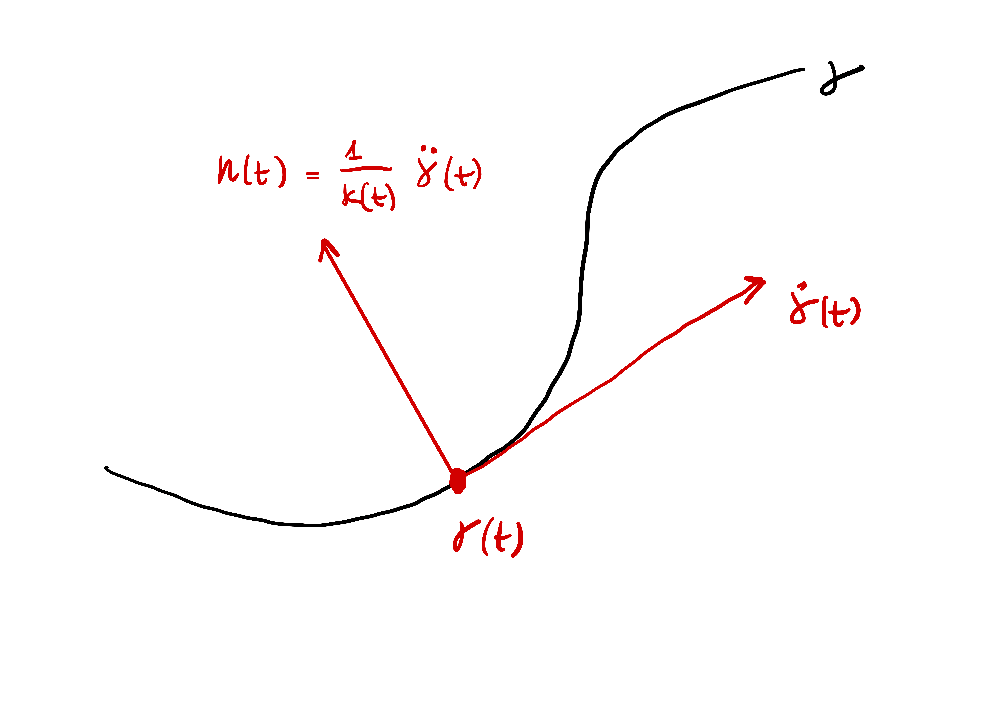

2 Curvature and Torsion
We have seen how to describe curves and reparametrized them. Now we want to look at local properties of curves:
- How much does a curve twist?
- How much does a curve bend?
We will measure two quantities:
- Curvature: measures how much a curve \({\pmb{\gamma}}\) deviates from a straight line.
- Torsion: measures how much a curve \({\pmb{\gamma}}\) deviates from a plane.
For example a 2D spiral is curved, but still lies in a plane. Instead the Helix both deviates from a straight line and pulls away from any fixed plane.
2.1 Curvature
We start with an informal discussion. Suppose \({\pmb{\gamma}}\) is a straight line \[ {\pmb{\gamma}}(t) = \mathbf{a} + t \mathbf{v} \] with \(\mathbf{a}, \mathbf{v} \in \mathbb{R}^3\). Whichever the definition of curvature will be, we expect the curvature of a straight line to be zero. The tangent vector to \({\pmb{\gamma}}\) is constant \[ \dot{{\pmb{\gamma}}}(t) = \mathbf{v} \,. \] If we further derive the tangent vector, we obtain \[ \ddot{{\pmb{\gamma}}}(t) = {\pmb{0}}\,. \] Thus \(\ddot{{\pmb{\gamma}}}\) seems to be a good candidate for the definition of curvature of \({\pmb{\gamma}}\) at the point \({\pmb{\gamma}}(t)\).
Suppose now that \({\pmb{\gamma}}\colon (a,b) \to \mathbb{R}^2\) is a planar curve with unit-speed. We have proven that in this case \[ \dot{{\pmb{\gamma}}}\cdot \ddot{{\pmb{\gamma}}}= 0 \,, \] that is, the vector \(\ddot{{\pmb{\gamma}}}\) is orthogonal to the tangent \(\dot{{\pmb{\gamma}}}\) at all times. Now let \(\mathbf{n}(t)\) be the unit vector orthogonal to \(\dot{{\pmb{\gamma}}}(t)\) at the point \({\pmb{\gamma}}(t)\). The amount that the curve \({\pmb{\gamma}}\) deviates from its tangent at \({\pmb{\gamma}}(t)\) after time \(t_0\) is \[ [ {\pmb{\gamma}}(t + t_0) - {\pmb{\gamma}}(t) ] \cdot \mathbf{n}(t) \,, \tag{2.1}\] as seen in Figure Figure 2.1.
Equation (2.1) is what we take as measure of curvature. Since \[ \dot{{\pmb{\gamma}}}(t) \cdot \ddot{{\pmb{\gamma}}}(t) = 0 \quad \mbox{ and } \quad \dot{{\pmb{\gamma}}}(t) \cdot \mathbf{n}(t)= 0 \,, \] we conclude that \(\ddot{{\pmb{\gamma}}}(s)\) is parallel to \(\mathbf{n}(t)\). Since \(\mathbf{n}(t)\) is a unit vector, there exists a scalar \(\kappa(t)\) such that \[ \ddot{{\pmb{\gamma}}}(t) = \kappa(t) \, \mathbf{n}(t) \,. \] Taking the norms of the above and recalling that \(\left\| \mathbf{n} \right\| = 1\) gives \[ \kappa(t) = \left\| \ddot{{\pmb{\gamma}}}(t) \right\| \] Now, approximate \({\pmb{\gamma}}\) at \(t\) with its second order Taylor polynomial: \[ {\pmb{\gamma}}(t+t_0) = {\pmb{\gamma}}(t) + \dot{{\pmb{\gamma}}}(t) t_0 + \frac{\ddot{{\pmb{\gamma}}}(t)}{2} t_0^2 + o(t_0^2) \] where the remainder \(o(t_0^2)\) is such that \[ \lim_{t_0 \to 0} \ \frac{o(t_0^2)}{t_0^2} = 0 \,. \] Therefore, discarding the remainder, \[ {\pmb{\gamma}}(t+t_0) - {\pmb{\gamma}}(t) \approx \dot{{\pmb{\gamma}}}(t) t_0 + \frac{\ddot{{\pmb{\gamma}}}(t)}{2} t_0^2 \,. \] Multiplying by \(\mathbf{n}(t)\) we get \[ ({\pmb{\gamma}}(t+t_0) - {\pmb{\gamma}}(t)) \cdot \mathbf{n}(t) \approx \dot{{\pmb{\gamma}}}(t) \cdot \mathbf{n}(t) t_0 + \frac{\ddot{{\pmb{\gamma}}}(t) \cdot \mathbf{n}(t) }{2} t_0^2\,. \] Recalling that \[ \dot{{\pmb{\gamma}}}(t) \cdot \mathbf{n}(t) = 0\,, \quad \ddot{{\pmb{\gamma}}}(t) \cdot \mathbf{n}(t) = \kappa(t) \,, \] we then obtain \[ [{\pmb{\gamma}}(t + t_0) - {\pmb{\gamma}}(t) ] \cdot \mathbf{n}(t) \approx \frac{1}{2} \, \kappa(t) \, t_0^2 \]
Important
The amount that \({\pmb{\gamma}}\) deviates from a straight line is proportional to \[
\kappa(t) = \left\| \ddot{{\pmb{\gamma}}}(t) \right\|\,.
\]
We take this as definition of curvature for a general unit-speed curve in \(\mathbb{R}^n\).
Definition 1: Curvature of unit-speed curve
Let \({\pmb{\gamma}}\ \colon (a,b) \to \mathbb{R}^n\) be a unit-speed curve. The curvature of \({\pmb{\gamma}}\) at \({\pmb{\gamma}}(t)\) is \[
\kappa(t) := \left\| \ddot{{\pmb{\gamma}}}(t) \right\| \,.
\]
Note that \(\kappa(t)\) is a function of the parameter \(t\): The curvature of \({\pmb{\gamma}}\) can change from point to point.
Example 2: Curvature of the circle
We have seen that the arc-length parametrization of the circle of center \((x_0,y_0)\) and radius \(R>0\) is \[
{\pmb{\gamma}}(t) = \left( x_0 + R \cos \left( \frac{t}{R} \right), y_0 + \sin \left( \frac{t}{R} \right) \right)
\] As \({\pmb{\gamma}}\) is parametrized by arc-length, we have that \({\pmb{\gamma}}\) is unit-speed. To compute the curvature we need the second derivative \(\ddot{{\pmb{\gamma}}}\) \[\begin{align*}
\dot{{\pmb{\gamma}}}(t) & = \left( - \sin \left( \frac{t}{R} \right) , \cos \left( \frac{t}{R} \right)\right) \\
\ddot{{\pmb{\gamma}}}(t) & = \left( -\frac{1}{R} \cos \left( \frac{t}{R} \right) , - \frac{1}{R} \sin \left( \frac{t}{R} \right)\right)
\end{align*}\] Therefore the curvature of \({\pmb{\gamma}}\) is \[
\kappa(t) = \left\| \ddot{{\pmb{\gamma}}}(t) \right\| = \frac{1}{R} \,.
\] In this case \(\kappa\) is constant. The above formula also tells us that the curvature is inversely proportional to the radius of the circle: A large circle will look (locally) almost like a straight line.
Question: How do we define curvature for arbitrary curves?
Answer: When \({\pmb{\gamma}}\) is regular we can use unit-speed reparametrizations to define \(\kappa\).
Definition 3: Curvature of regular curve
Let \({\pmb{\gamma}}\colon (a,b) \to \mathbb{R}^3\) be a regular curve and \(\widetilde{{\pmb{\gamma}}}\) be a unit-speed reparametrization of \({\pmb{\gamma}}\), with \[
{\pmb{\gamma}}= \widetilde{{\pmb{\gamma}}}\circ \phi \,, \quad \phi\colon (a,b) \to (\tilde{a},\tilde{b}) \,.
\] Denote by \[
\widetilde{\kappa}\colon (\tilde{a},\tilde{b}) \to \mathbb{R}\,, \qquad \widetilde{\kappa}(t) := \left\| \ddot{\widetilde{{\pmb{\gamma}}}}(t) \right\|
\] the curvature of \(\widetilde{{\pmb{\gamma}}}\). The curvature of \({\pmb{\gamma}}\) at \({\pmb{\gamma}}(t)\) is defined by \[
\kappa(t) := \widetilde{\kappa}(\phi(t))
\]
In order for the above definition to make sense, we need to check that the curvature \(\kappa\) does not change if we choose a different unit-speed reparametrization. This is shown in the next Proposition.
Proposition 4: \(\kappa\) is invariant for unit-speed reparametrization
Consider the setting of Definition 3. If \(\hat{{\pmb{\gamma}}}\) is another unit-speed reparametrization of \({\pmb{\gamma}}\), with \({\pmb{\gamma}}= \hat{{\pmb{\gamma}}} \circ \psi\), then \[
\kappa(t) = \widetilde{\kappa}( \phi(t) ) = \hat{\kappa}(\psi(t)) \,, \quad \forall \, t \in (a,b)
\] where \[
\hat{\kappa}(t) := \left\| \ddot{\hat{ {\pmb{\gamma}}}}(t) \right\|
\] is the curvature of \(\hat{{\pmb{\gamma}}}\).
Proof
Since \(\widetilde{{\pmb{\gamma}}}\) and \(\hat{{\pmb{\gamma}}}\) are both reparametrizations of \({\pmb{\gamma}}\) \[
\widetilde{{\pmb{\gamma}}}( \phi(t)) = {\pmb{\gamma}}(t) = \hat{{\pmb{\gamma}}} (\psi(t) )
\] Using that \(\phi\) is invertible we obtain \[
{\widetilde{{\pmb{\gamma}}}}(t) = \hat{\pmb{\gamma}}(\xi(t))\,, \quad \xi := \psi \circ \phi^{-1} \,,
\tag{2.2}\] and \(\xi\) is a diffeomorphism, being composition of diffeomorphisms. Differentiating (2.2) \[
\dot{\widetilde{{\pmb{\gamma}}}}(t) = \dot{\hat{{\pmb{\gamma}}}}(\xi(t)) \dot\xi(t) \,.
\tag{2.3}\] Taking the norms and recalling that \(\widetilde{{\pmb{\gamma}}}\) and \(\hat{\pmb{\gamma}}\) are unit-speed, we get \[
|\dot\xi(t)| = 1 \,, \quad \forall \, t \,.
\] Since \(\dot\xi\) is continuous we infer \[
\dot\xi(t) \equiv 1 \quad \mbox{or} \quad
\dot\xi(t) \equiv -1 \,.
\] In both cases \[
\ddot \xi \equiv 0 \,.
\] Differentiating (2.3) we then obtain \[\begin{align*}
\ddot{\widetilde{{\pmb{\gamma}}}}(t) & = \ddot{\hat{{\pmb{\gamma}}}}(\xi(t)) \dot\xi^2(t) +
\dot{\hat{{\pmb{\gamma}}}}(\xi(t)) \ddot\xi (t) \\
& = \ddot{\hat{{\pmb{\gamma}}}}(\xi(t)) \dot\xi^2(t) \,,
\end{align*}\] where we used that \(\ddot{\xi} = 0\). Taking the norms and using again that \(|\dot\xi| \equiv 1\) \[
\left\| \ddot{\widetilde{{\pmb{\gamma}}}}(t) \right\| = \left\| \ddot{\hat{{\pmb{\gamma}}}}(\xi(t)) \right\| \,.
\] Recalling that \(\xi = \psi \circ \phi^{-1}\) and the definitions of \(\widetilde{\kappa}\) and \(\hat{\kappa}\) we conclude \[
\widetilde{\kappa}( \phi(t) ) = \left\| \ddot{\widetilde{{\pmb{\gamma}}}}( \phi(t)) \right\| = \left\| \ddot{\hat{{\pmb{\gamma}}}}(\psi(t)) \right\| = \hat{\kappa} ( \psi(t) ) \,.
\]
Remark 5: Method for computing curvature
In summary, the curvature of a regular curve \[ {\pmb{\gamma}}\ \colon (a,b) \to \mathbb{R}^n \] is defined via unit-speed reparametrizations of \({\pmb{\gamma}}\). To compute \(\kappa\) we do the following:
Find a unit-speed reparametrization \(\widetilde{{\pmb{\gamma}}}\) of the regular curve \({\pmb{\gamma}}\)
This can be done by computing \(s\) the arc-length of \({\pmb{\gamma}}\), and then defining the arc-length reparametrization \[ \widetilde{{\pmb{\gamma}}}:= {\pmb{\gamma}}\circ s^{-1} \]
Compute curvature of \(\widetilde{{\pmb{\gamma}}}\) \[ \widetilde{\kappa}(s) = \left\| \ddot{\widetilde{{\pmb{\gamma}}}}(s) \right\| \]
The curvature of \({\pmb{\gamma}}\) at \({\pmb{\gamma}}(t)\) is \[ \kappa (t)= \widetilde{\kappa}(s(t)) \]
Important
When \({\pmb{\gamma}}\) is regular and has values in \(\mathbb{R}^3\), there is a way to compute \(\kappa\) without reparametrizing. To see this, we will first need the notion of cross product, or vector product.
Before proceeding with the next example, let us give a short overview of the Hyperbolic functions.
Remark 6: Hyperbolic functions
The Hyperbloic functions are the analogous of the trigonometric functions, but defined using the hyperbola rather than the circle. Their formulas can be obtained by means of the exponential function \(e^t\). We have:
Hyperbolic cosine: The even part of the function \(e^t\), that is, \[ \cosh (t) = \frac {e^t + e^{-t}} {2} = \frac {e^{2t} + 1} {2e^t} = \frac {1 + e^{-2t}} {2e^{-t}} \,. \]
Hyperbolic sine: The odd part of the function \(e^t\), that is, \[ \sinh (t) = \frac {e^t - e^{-t}} {2} = \frac {e^{2t} - 1} {2e^t} = \frac {1 - e^{-2t}} {2e^{-t}} \,. \]
Hyperbolic tangent: Defined by \[ \tanh(t) = \frac{\sinh t}{\cosh t} = \frac {e^t - e^{-t}} {e^t + e^{-t}} = \frac{e^{2t} - 1} {e^{2t} + 1} \,. \]
Hyperbolic cotangent: The reciprocal of \(\tanh\) for \(t \neq 0\), \[ \coth t = \frac{\cosh t}{\sinh t} = \frac {e^t + e^{-t}} {e^t - e^{-t}} = \frac{e^{2t} + 1} {e^{2t} - 1} \,. \]
Hyperbolic secant: The reciprocal of \(\cosh\) \[ \mathop{\mathrm{sech}}(t) = \frac{1}{\cosh t} = \frac {2} {e^t + e^{-t}} = \frac{2e^t} {e^{2t} + 1} \,. \]
Hyperbolic cosecant: The reciprocal of \(\sinh\) for \(t \neq 0\), \[ \mathop{\mathrm{csch}}(t) = \frac{1}{\sinh t} = \frac {2} {e^t - e^{-t}} = \frac{2e^t} {e^{2t} - 1} \,. \]
For a plot \(\cosh, \sinh, \tanh\) see Figure 2.2 below. The properties of the hyperbolic functions which are of interest to us are:
Identities: \[\begin{align*} &\cosh(t) + \sinh(t) = e^t \\ &\cosh(t) - \sinh(t) = e^{-t} \\ &\cosh^2(t) - \sinh^2(t) = 1 \\ &{\mathop{\mathrm{sech}}}^2(t) - \tanh^2(t) = 1 \end{align*}\]
Derivatives: \[\begin{align*} \frac{d}{dt} \left[ \sinh(t) \right] & = \cosh (t) \\ \frac{d}{dt} \left[ \cosh(t) \right] & = \sinh (t) \\ \frac{d}{dt} \left[ \tanh(t) \right] & = 1 - \tanh^2 (t) = - {\mathop{\mathrm{csch}}}^2(t) \end{align*}\]
Integrals: \[\begin{align*} \int_{t_0}^t \sinh(u) \, du & = \cosh (t) - \cosh( t_0 ) \\ \int_{t_0}^t \cosh(u) \, du & = \sinh (t) - \sinh( t_0 ) \\ \int_{t_0}^t \tanh(u) \, du & = \log ( \cosh (t) ) - \log ( \cosh (t_0) ) \end{align*}\]

Example 7: The Catenary
The catenary is the shape of a heavy chain suspended at its ends. The chain is only subjected to gravity, see Figure 2.3. This shape looks similar to a parabola, but it is not a parabola. This was first noted by Galilei, see this Wikipedia page. The profile of the hanging chain can be obtained via a minimization problem, and one can show it is of the form \[
{\pmb{\gamma}}(t) = ( t, \cosh(t) ) \,, \quad t \in \mathbb{R}\,.
\] See Figure 2.4 for a plot of \({\pmb{\gamma}}\). Let us check if \({\pmb{\gamma}}\) is regular. We have \[
\dot{{\pmb{\gamma}}}(t) = (1 , \sinh(t))
\] so that \[
\left\| \dot{{\pmb{\gamma}}} \right\|^2 = 1 + {\sinh}^2 (t) = \cosh^2 (t)
\quad \implies \quad
\left\| \dot{{\pmb{\gamma}}} \right\| = \cosh (t) \,.
\] Note that \[
\cosh(t) \geq 1
\] showing that \({\pmb{\gamma}}\) is regular. However \[
\left\| \dot{{\pmb{\gamma}}}(1) \right\| = \cosh (1) = \frac{e + e^{-1}}{2} \approx 1.54 \,,
\] proving that \({\pmb{\gamma}}\) is not unit-speed. Let us then compute the arc-length of \({\pmb{\gamma}}\) starting at \(t_0 = 0\) \[
s(t) = \int_0^t \left\| \dot{{\pmb{\gamma}}}(u) \right\| \, du = \int_0^t \cosh (u) \, du = \sinh (t)
\] where we used that \(\sinh(0) = 0\). We need to invert \(s\). We have \[\begin{align*}
s = \sinh(t) \quad & \iff \quad s = \frac{e^t - e^{-t}}{2} \\
\quad & \iff \quad e^{2t} - 2s e^{t} - 1 = 0\,,
\end{align*}\] where the last equation was obtained by rearranging and multiplying both sides by \(e^t\). Now we substitute \[
y = e^t
\] and obtain \[\begin{align*}
e^{2t} - 2s e^{t} - 1 = 0 \quad & \iff \quad y^{2} - 2s y - 1 = 0 \\
\quad & \iff \quad y_{\pm} = s \pm \sqrt{1+s^2} \,.
\end{align*}\] Notice that \[
y_{+} = s + \sqrt{1 + s^2} \geq s + \sqrt{s^2} = s + |s| \geq 0
\] by definition of absolute value. As we were looking for \(y\) in the form \(y=e^t\), we only consider the positive solution \(y_+\). Then \[
e^t = y_+ = s + \sqrt{1 + s^2 } \quad \implies \quad t = \log \left( s + \sqrt{1 + s^2} \right) \,.
\] We have proven that the inverse of the arc-length \(s(t)\) is \[
\psi(s) = t(s) = \log \left( s + \sqrt{ 1+ s^2} \right) \,.
\] Therefore the arc-length reparametrization of \({\pmb{\gamma}}\) is \[
\widetilde{{\pmb{\gamma}}}(s) := {\pmb{\gamma}}( t(s) ) = \left( \log \left( s + \sqrt{ 1+ s^2} \right) , \sqrt{1 + s^2} \right) \,.
\] We can now compute the curvature. We have: \[\begin{align*}
\dot{\widetilde{{\pmb{\gamma}}}}(s) & = \left( \frac{1}{ \sqrt{1 + s^2} } , \frac{s}{ \sqrt{1 + s^2}} \right) \\
\ddot{\widetilde{{\pmb{\gamma}}}}(s) & = \left( - \frac{s}{ (1 + s^2)^{3/2} } , \frac{1}{(1 + s^2)^{3/2} } \right)
\end{align*}\] Hence \[
\left\| \ddot{\widetilde{{\pmb{\gamma}}}}(s) \right\|^2 = \frac{s^2}{(1+s^2)^3} + \frac{1}{(1+s^2)^3} = \frac{1}{(1+s^2)^2} \,.
\] Therefore the curvature of \(\widetilde{{\pmb{\gamma}}}\) is \[
\widetilde{\kappa}(s) = \left\| \ddot{\widetilde{{\pmb{\gamma}}}}(s) \right\|= \frac{1}{1+s^2} \,.
\] Recalling that \(s(t) = \sinh(t)\), we conclude that the curvature of \({\pmb{\gamma}}\) is \[
\kappa (t) = \widetilde{\kappa}(s(t)) = \frac{1}{1+ \sinh(t)^2} =
\frac{1}{\cosh(t)^2}
\] where we used the identity \(1 + \sinh^2 = \cosh^2\).
2.2 Vector product in \(\mathbb{R}^3\)
The discussion in this section follows (do Carmo 2017). We start by defining orientation for a vector space.
Definition 8: Same orientation
Consider two ordered basis of \(\mathbb{R}^3\) \[
B = (\mathbf{b}_1,\mathbf{b}_2,\mathbf{b}_3) \,, \quad \tilde{B} = (\widetilde{\mathbf{b}}_1,\widetilde{\mathbf{b}}_2,\widetilde{\mathbf{b}}_3) \,.
\] We say that \(B\) and \(\widetilde{B}\) have the same orientation if the matrix of change of basis has positive determinant, that is, if \[
\det P > 0
\] where \(P \in \mathbb{R}^{3 \times 3}\) is such that \[
\tilde{B} = P^{-1} B P \,.
\]
When two basis \(B\) and \(\widetilde{B}\) have the same orientation, we write \[ B \sim \widetilde{B} \,. \] The above is clearly an equivalence relation on the set of ordered basis. Therefore the set of ordered basis of \(\mathbb{R}^3\) can be decomposed into equivalence classes. Since the determinant of the matrix of change of basis can only be positive or negative, there are only two equivalence classes.
Definition 9: Orientation
The two equivalence classes determined by \(\sim\) on the set of ordered basis are called orientations.
Definition 10: Positive orientation
Consider the standard basis of \(\mathbb{R}^3\) \[ E = (\mathbf{e}_1,\mathbf{e}_2,\mathbf{e}_3) \] where we set \[ \mathbf{e}_1 = (1,0,0)\,, \quad \mathbf{e}_2 = (0,1,0) \,, \quad \mathbf{e}_3 = (0,0,1) \,. \] Then:
- The orientation corresponding to \(E\) is called positive orientation of \(\mathbb{R}^3\).
- The orientation corresponding to the other equivalence class is called negative orientation of \(\mathbb{R}^3\).
For a basis \(B\) of \(\mathbb{R}^3\) we say that:
- \(B\) is a positive basis if it belongs to the class of \(E\).
- \(B\) is a negative basis if it does not belong to the class of \(E\).
Example 11
Since we are dealing with ordered basis, the order in which vectors appear is fundamental. For example, we defined the equivalence class of \[
E = (\mathbf{e}_1,\mathbf{e}_2,\mathbf{e}_3) \,,
\] to be the positive orientation of \(\mathbb{R}^3\). In particular \(e\) is a positive basis.
Consider instead \[ \widetilde{E} = (\mathbf{e}_2,\mathbf{e}_1,\mathbf{e}_3) \,. \] The matrix of change of variables between \(\widetilde{E}\) and \(E\) is \[ P = (\mathbf{e}_2 | \mathbf{e}_1 | \mathbf{e}_3 ) = \left( \begin{array}{ccc} 0 & 1 & 0 \\ 1 & 0 & 0 \\ 0 & 0 & 1 \\ \end{array} \right) \] and clearly \[ \det P = - 1 < 0 \,. \] Thus \(\widetilde{E}\) does not belong to the class of \(E\), and is therefore a negative basis.
Consider instead \[ \widetilde{E} = (\mathbf{e}_2,\mathbf{e}_1,\mathbf{e}_3) \,. \] The matrix of change of variables between \(\widetilde{E}\) and \(E\) is \[ P = (\mathbf{e}_2 | \mathbf{e}_1 | \mathbf{e}_3 ) = \left( \begin{array}{ccc} 0 & 1 & 0 \\ 1 & 0 & 0 \\ 0 & 0 & 1 \\ \end{array} \right) \] and clearly \[ \det P = - 1 < 0 \,. \] Thus \(\widetilde{E}\) does not belong to the class of \(E\), and is therefore a negative basis.
We are now ready to define the vector product in \(\mathbb{R}^3\).
Definition 12: Vector product in \(\mathbb{R}^3\)
Let \(\mathbf{u},\mathbf{v}\in \mathbb{R}^3\). The vector product of \(\mathbf{u}\) and \(\mathbf{v}\) is the unique vector \[
\mathbf{u}\times \mathbf{v}\in \mathbb{R}^3
\] which satisfies the property: \[
(\mathbf{u}\times \mathbf{v}) \cdot \mathbf{w}=
\left|
\begin{array}{ccc}
u_1 & u_2 & u_3 \\
v_1 & v_2 & v_3 \\
w_1 & w_2 & w_3 \\
\end{array}
\right| \,, \quad \forall \, \mathbf{w}\in \mathbb{R}^3 \,.
\tag{2.4}\] Here \(|A|\) denotes the determinant of the matrix \(A = (a_{ij})_{ij}\), and \(u_i\), \(v_i\), \(w_i\) are the components of \(\mathbf{u}\), \(\mathbf{v}\), \(\mathbf{w}\), i.e. \[
\mathbf{u}= \sum_{i=1}^3 u_i \mathbf{e}_i \,, \quad
\mathbf{v}= \sum_{i=1}^3 v_i \mathbf{e}_i \,, \quad
\mathbf{w}= \sum_{i=1}^3 w_i \mathbf{e}_i \,,
\] with \((\mathbf{e}_1,\mathbf{e}_2,\mathbf{e}_3)\) standard basis of \(\mathbb{R}^3\).
The following proposition gives an explicit formula for computing \(\mathbf{u}\times \mathbf{v}\).
Proposition 13
Let \(\mathbf{u},\mathbf{v}\in \mathbb{R}^3\). Then \[
\mathbf{u}\times \mathbf{v}=
\left|
\begin{array}{cc}
u_2 & u_3 \\
v_2 & v_3
\end{array}
\right| \mathbf{e}_1 -
\left|
\begin{array}{cc}
u_1 & u_3 \\
v_1 & v_3
\end{array}
\right| \mathbf{e}_2 +
\left|
\begin{array}{cc}
u_1 & u_2 \\
v_1 & v_2
\end{array}
\right| \mathbf{e}_3 \,.
\tag{2.5}\]
Proof
Denote by \((\mathbf{u}\times \mathbf{v})_i\) the \(i\)-th component of \(\mathbf{u}\times \mathbf{v}\) with respect to the standard basis, that is, \[
\mathbf{u}\times \mathbf{v}= \sum_{i=1}^3 (\mathbf{u}\times \mathbf{v})_i \, \mathbf{e}_i \,.
\] We can use (2.4) with \(\mathbf{w}= \mathbf{e}_1\) to obtain \[
(\mathbf{u}\times \mathbf{v}) \cdot \mathbf{e}_1 =
\left|
\begin{array}{ccc}
u_1 & u_2 & u_3 \\
v_1 & v_2 & v_3 \\
1 & 0 & 0 \\
\end{array}
\right| =
\left|
\begin{array}{cc}
u_2 & u_3 \\
v_2 & v_3
\end{array}
\right|
\] where we used the Laplace expansion for computing the determinant of the \(3 \times 3\) matrix. As the standard basis is orthonormal, by bilinearity of the scalar product we get \[
(\mathbf{u}\times \mathbf{v}) \cdot \mathbf{e}_1 = \sum_{i=1}^3 (\mathbf{u}\times \mathbf{v})_i \, \mathbf{e}_i \cdot \mathbf{e}_1 = (\mathbf{u}\times \mathbf{v})_i \,.
\] Therefore we have shown \[
(\mathbf{u}\times \mathbf{v})_1 = \left|
\begin{array}{cc}
u_2 & u_3 \\
v_2 & v_3
\end{array}
\right| \,.
\] Similarly we obtain \[
(\mathbf{u}\times \mathbf{v})_2 = \left|
\begin{array}{ccc}
u_1 & u_2 & u_3 \\
v_1 & v_2 & v_3 \\
0 & 1 & 0 \\
\end{array}
\right| = -
\left|
\begin{array}{cc}
u_1 & u_3 \\
v_1 & v_3
\end{array}
\right|
\] and \[
(\mathbf{u}\times \mathbf{v})_3 = \left|
\begin{array}{ccc}
u_1 & u_2 & u_3 \\
v_1 & v_2 & v_3 \\
0 & 0 & 1 \\
\end{array}
\right| =
\left|
\begin{array}{cc}
u_1 & u_2 \\
v_1 & v_2
\end{array}
\right| \,,
\] from which we conclude.
Notation
In some cases we will denote formula (2.5) by \[
\mathbf{u}\times \mathbf{v}=
\left|
\begin{array}{ccc}
\mathbf{i}& \mathbf{j}& \mathbf{k}\\
u_1 & u_2 & u_2 \\
v_1 & v_2 & v_3
\end{array}
\right| \,.
\]
Let us collect some crucial properties of the vector product.
Proposition 14
The vector product in \(\mathbb{R}^3\) satisfies the following properties: For all \(\mathbf{u}, \mathbf{v}\in \mathbb{R}^3\)
\(\mathbf{u}\times \mathbf{v}= - \mathbf{v}\times \mathbf{u}\)
\(\mathbf{u}\times \mathbf{v}= {\pmb{0}}\) if and only if \(\mathbf{u}\) and \(\mathbf{v}\) are linearly dependent
\((\mathbf{u}\times \mathbf{v}) \cdot \mathbf{u}= 0\), \((\mathbf{u}\times \mathbf{v}) \cdot \mathbf{v}= 0\)
For all \(\mathbf{w}\in \mathbb{R}^3\), \(a,b \in \mathbb{R}\) \[ (a\mathbf{u}+ b\mathbf{w}) \times \mathbf{v}= a \mathbf{u}\times \mathbf{v}+ b\mathbf{w}\times \mathbf{w} \]
For all \(\mathbf{x},\mathbf{y}\in \mathbb{R}^3\) it holds \[ (\mathbf{u}\times \mathbf{v}) \cdot (\mathbf{x}\times \mathbf{y}) = \left| \begin{array}{cc} \mathbf{u}\cdot \mathbf{x}& \mathbf{v}\cdot \mathbf{x}\\ \mathbf{u}\cdot \mathbf{y}& \mathbf{v}\cdot \mathbf{y} \end{array} \right| \tag{2.6}\]
Denote by \(\theta\) the angle between \(\mathbf{v}\) and \(\mathbf{w}\) \[ \theta := \cos^{-1} \left ( \frac{\mathbf{u}\cdot \mathbf{w}}{ \| \mathbf{v}\| \|\mathbf{w}\| } \right) \,. \] The following identity holds \[ \| \mathbf{u}\times \mathbf{v}\| = \| \mathbf{u}\|^2 \| \mathbf{v}\|^2 \sin^2(\theta) \tag{2.7}\]
Proof
For point (1) we have \[\begin{align*} (\mathbf{u}\times \mathbf{v}) \cdot \mathbf{w}& = \left| \begin{array}{ccc} u_1 & u_2 & u_2 \\ v_1 & v_2 & v_3 \\ w_1 & w_2 & w_3 \end{array} \right| \\ & = - \left| \begin{array}{ccc} v_1 & v_2 & v_3 \\ u_1 & u_2 & u_2 \\ w_1 & w_2 & w_3 \end{array} \right| \\ & = - (\mathbf{v}\times \mathbf{u}) \cdot \mathbf{w} \end{align*}\] where we used that swapping two rows in a matrix changes the sign of the determinant. Since \(\mathbf{w}\) is arbitrary, we conclude point (1).
Let \(A \in \mathbb{R}^{3 \times 3}\) be a matrix. Points (2)-(3) follow from the fact that \[ \det(A) = 0 \] if and only if at least 2 rows or columns of \(A\) are linearly dependent.
Point (4) can be easily verified by direct calculation.
Point (5) can be obtained as follows: Check by hand that formula (2.6) holds for the vectors of the standard basis \(\mathbf{e}_1, \mathbf{e}_2,\mathbf{e}_3\); Then write the vectors \(\mathbf{v}, \mathbf{w}, \mathbf{x},\mathbf{y}\) in coordinates with
respect to the standard basis; Using the linearity of the vector product obtained in point (4), conclude that (2.6) holds for \(\mathbf{v}, \mathbf{w}, \mathbf{x},\mathbf{y}\).By definition of \(\theta\) we have \[ \mathbf{v}\cdot \mathbf{w}= \| \mathbf{v}\| \|\mathbf{w}\| \cos(\theta) \] Applying (2.6) with \(\mathbf{x}= \mathbf{v}\) and \(\mathbf{y}= \mathbf{w}\) we conclude \[\begin{align*} \| \mathbf{u}\times \mathbf{v}\|^2 & = (\mathbf{u}\times \mathbf{v}) \cdot (\mathbf{u}\times \mathbf{v}) = \left| \begin{array}{cc} \mathbf{u}\cdot \mathbf{u}& \mathbf{v}\cdot \mathbf{u}\\ \mathbf{u}\cdot \mathbf{v}& \mathbf{v}\cdot \mathbf{v} \end{array} \right| \\ & = \| \mathbf{u}\|^2 \| \mathbf{v}\|^2 - |\mathbf{u}\cdot \mathbf{v}|^2 \\ & = \| \mathbf{u}\|^2 \| \mathbf{v}\|^2 - \| \mathbf{u}\|^2 \| \mathbf{v}\|^2 \cos^2(\theta) \\ & = \| \mathbf{u}\|^2 \| \mathbf{v}\|^2 (1-\cos^2(\theta)) \\ & = \| \mathbf{u}\|^2 \| \mathbf{v}\|^2 \sin^2(\theta) \end{align*}\]
Remark 15: Geometric interpretation of vector product
Let \(\mathbf{u}, \mathbf{v}\in \mathbb{R}^3\) be linearly independent. We make some observations:
Property 3 in Proposition 14 says that \[ (\mathbf{u}\times \mathbf{v}) \cdot \mathbf{u}= 0 \,, \quad (\mathbf{u}\times \mathbf{v}) \cdot \mathbf{v}= 0 \,. \] Therefore \(\mathbf{u}\times \mathbf{v}\) is orthogonal to both \(\mathbf{u}\) and \(\mathbf{v}\).
In particular \(\mathbf{u}\times \mathbf{v}\) is orthogonal to the plane generated by \(\mathbf{u}\) and \(\mathbf{v}\).
Since \(\mathbf{u}\) and \(\mathbf{v}\) are linearly independent, Property 2 in Proposition 14 says that \[ \mathbf{u}\times \mathbf{v}\neq {\pmb{0}} \]
Therefore we have \[ (\mathbf{u}\times \mathbf{v}) \cdot (\mathbf{u}\times \mathbf{v}) = \left\| \mathbf{u}\times \mathbf{v} \right\|^2 > 0 \]
On the other hand, using the definition of \(\mathbf{u}\times \mathbf{v}\) with \(\mathbf{w}= \mathbf{v}\times \mathbf{w}\) yields \[ (\mathbf{u}\times \mathbf{v}) \cdot (\mathbf{u}\times \mathbf{v}) = \left| \begin{array}{ccc} u_1 & u_2 & u_3 \\ v_1 & v_2 & v_3 \\ (\mathbf{u}\times \mathbf{v})_1 & (\mathbf{u}\times \mathbf{v})_2 & (\mathbf{u}\times \mathbf{v})_3 \\ \end{array} \right| \]
Therefore the determinant of the matrix \[ (\mathbf{u}| \mathbf{v}| \mathbf{u}\times \mathbf{v}) \] is positive. This shows that \[ (\mathbf{u}, \mathbf{v}, \mathbf{u}\times \mathbf{v}) \] is a positive basis of \(\mathbb{R}^3\).
Let \(\theta\) be the angle between \(\mathbf{v}\) and \(\mathbf{w}\) and \(A\) the area of the parallelogram with sides \(\mathbf{u}\) and \(\mathbf{v}\), see Figure 2.5. Basic trigonometry gives that \[ A = \| u \| \| v \| \sin (\theta) \,. \] Using (2.6) we have \[ \| \mathbf{u}\times \mathbf{v}\| = \| \mathbf{u}\| \| \mathbf{v}\| \sin(\theta) = A \]
We have therefore proven the following theorem.
Theorem 16: Geometric Properties of vector product
Let \(\mathbf{u},\mathbf{v}\in \mathbb{R}^3\) be linearly independent. Then
- \(\mathbf{u}\times \mathbf{v}\) is orthogonal to the plane spanned by \(\mathbf{u},\mathbf{v}\)
- \(\| \mathbf{u}\times \mathbf{v}\|\) is equal to the area of the parallelogram with sides \(\mathbf{u},\mathbf{v}\)
- \(\mathbf{u}\times \mathbf{v}\) is such that \[ (\mathbf{u},\mathbf{v},\mathbf{u}\times \mathbf{v}) \] is a positive basis of \(\mathbb{R}^3\).
We conclude with noting that the cross product is not associative, and with a useful proposition for differentiating the cross product of curves in \(\mathbb{R}^3\).
Proposition 17
The vector product is not associative. In particular, for all \(\mathbf{u}, \mathbf{v}, \mathbf{w}\in \mathbb{R}^3\) it holds: \[
(\mathbf{u}\times \mathbf{v}) \times \mathbf{w}= ( \mathbf{u}\cdot \mathbf{w}) \mathbf{v}- ( \mathbf{v}\cdot \mathbf{w}) \mathbf{u}\,.
\tag{2.8}\]
Proposition 18
Suppose \({\pmb{\gamma}},{\pmb{\eta}}\ \colon (a,b) \to \mathbb{R}^3\) are parametrized curves. Then the curve \[
{\pmb{\gamma}}\times {\pmb{\eta}}\ \colon (a,b) \to \mathbb{R}^3
\] is smooth, and \[
\frac{d}{dt} ( {\pmb{\gamma}}\times {\pmb{\eta}}) = \dot{{\pmb{\gamma}}}\times {\pmb{\eta}}+ {\pmb{\gamma}}\times \dot{{\pmb{\eta}}} \,.
\tag{2.9}\]
The proof is omitted. It follows immediately from formula (2.5).
2.3 Curvature formula in \(\mathbb{R}^3\)
Given a unit-speed curve \[ {\pmb{\gamma}}\ \colon (a,b) \to \mathbb{R}^n \] we defined its curvature as \[ \kappa(t) := \left\| \ddot{{\pmb{\gamma}}}(t) \right\| \,. \] When \({\pmb{\gamma}}\) is regular we defined the curvature as \[ \kappa(t) := \widetilde{\kappa}(s(t)) \] where \[ \widetilde{\kappa}(s) := \left\| \ddot{\widetilde{{\pmb{\gamma}}}}(s) \right\| \] is the curvature of the arc-length reparametrization \(\widetilde{{\pmb{\gamma}}}:= {\pmb{\gamma}}\circ s^{-1}\) of \({\pmb{\gamma}}\).
If \({\pmb{\gamma}}\) is a regular curve in \(\mathbb{R}^3\) the following formula can be used to compute \(\kappa\) without passing through \(\widetilde{{\pmb{\gamma}}}\).
Proposition 19: Curvature formula
Let \({\pmb{\gamma}}\colon (a,b) \to \mathbb{R}^3\) be a regular curve. The curvature \(\kappa(t)\) of \({\pmb{\gamma}}\) at \({\pmb{\gamma}}(t)\) is given by \[
\kappa(t) = \frac{ \left\| \dot{{\pmb{\gamma}}}\times \ddot{{\pmb{\gamma}}} \right\| }{ \left\| \dot{{\pmb{\gamma}}} \right\|^3 } \,.
\tag{2.10}\]
We delay the proof of the above Proposition, as this will get easier when the Frenet-Serret equations are introduced. For a proof which does not make use of the Frenet-Serret equations see Proposition 2.1.2 in (Pressley 2010).
For now we use (2.10) to compute the curvature of specific curves.
Example 20: Curvature of the straight line
Consider the straight line \[
{\pmb{\gamma}}(t) = \mathbf{a} + t \mathbf{v}
\] for some \(\mathbf{a}, \mathbf{v} \in \mathbb{R}^3\) fixed, with \(\mathbf{v} \neq {\pmb{0}}\). Then \[
\dot{{\pmb{\gamma}}}(t) = \mathbf{v} \,, \quad \ddot{{\pmb{\gamma}}}(t) = {\pmb{0}}\,.
\] Therefore \[
\left\| \dot{{\pmb{\gamma}}}(t) \right\| = \| \mathbf{v} \| \neq 0
\] showing that \({\pmb{\gamma}}\) is regular. We have \[
\dot{{\pmb{\gamma}}}\times \ddot{{\pmb{\gamma}}}= \mathbf{v} \times {\pmb{0}}= {\pmb{0}}\,.
\] Therefore the curvature is \[
\kappa(t) = \frac{ \left\| \dot{{\pmb{\gamma}}}\times \ddot{{\pmb{\gamma}}} \right\| }{ \left\| \dot{{\pmb{\gamma}}} \right\|^3 } = 0 \,,
\] as expected.
Example 21: Curvature of Helix
Consider the Helix of radius \(R>0\) and rise \(H>0\) \[ {\pmb{\gamma}}(t) = ( R\cos(t) , R\sin(t) , Ht) \,, \quad t \in \mathbb{R}\,. \] Then \[\begin{align*} \dot{{\pmb{\gamma}}}(t) & = ( -R\sin(t) , R\cos(t) , H) \\ \ddot{{\pmb{\gamma}}}(t) & = ( -R\cos(t) , -R\sin(t) , 0) \end{align*}\] From this we deduce that \[ \left\| \dot{{\pmb{\gamma}}}(t) \right\| = \sqrt{R^2 + H^2}\,, \] showing that \({\pmb{\gamma}}\) is regular. Finally \[\begin{align*} \dot{{\pmb{\gamma}}}\times \ddot{{\pmb{\gamma}}}& = \left| \begin{array}{cc} {\dot\gamma}_2 & {\dot\gamma}_3 \\ {\ddot\gamma}_2 & {\ddot\gamma}_3 \end{array} \right| \mathbf{e}_1 - \left| \begin{array}{cc} {\dot\gamma}_1 & {\dot\gamma}_3 \\ {\ddot\gamma}_1 & {\ddot\gamma}_3 \end{array} \right| \mathbf{e}_2 + \left| \begin{array}{cc} {\dot\gamma}_1 & {\dot\gamma}_2 \\ {\ddot\gamma}_1 & {\ddot\gamma}_2 \end{array} \right| \mathbf{e}_3 \\ & = \left| \begin{array}{cc} R\cos(t) & H \\ -R\sin(t) & 0 \end{array} \right| \mathbf{e}_1 - \left| \begin{array}{cc} -R\sin(t) & H \\ -R\cos(t) & 0 \end{array} \right| \mathbf{e}_2 + \left| \begin{array}{cc} -R\sin(t) & R\cos(t) \\ -R\cos(t) & -R\sin(t) \end{array} \right| \mathbf{e}_3 \\ & = \left( RH\sin(t), -RH\cos(t), R^2\cos^2(t) + R^2\sin^2(t) \right) \\ & = \left( RH\sin(t), -RH\cos(t), R^2 \right) \end{align*}\] and therefore \[ \left\| \dot{{\pmb{\gamma}}}\times \ddot{{\pmb{\gamma}}} \right\| = R\sqrt{R^2 + H^2 } \,. \] By the general formula we have \[ \kappa = \frac{ \left\| \dot{{\pmb{\gamma}}}\times \ddot{{\pmb{\gamma}}} \right\| }{ \left\| \dot{{\pmb{\gamma}}} \right\|^3 } = \frac{ R (R^2 + H^2)^{\frac12} }{ (R^2 + H^2)^{\frac32} } = \frac{ R }{ R^2 + H^2 } \]
We notice the following:
If \(H=0\) then the Helix is just a circle of radius \(R\). In this case the curvature is \[ \kappa = \frac{1}{R} \] which agrees with the curvature computed for the circle of radius \(R\).
If \(R=0\) then the Helix is just parametrizing the \(z\)-axis. In this case the curvature is \[ \kappa = 0 \,, \] which agrees with the curvature of a straight line.
2.4 Signed curvature of plane curves
In this section we assume to have plane curves, that is, curves with values in \(\mathbb{R}^2\). In this case we can give a geometric interpretation for the sign of the curvature. This cannot be done in higher dimension.
Definition 22
Let \({\pmb{\gamma}}\ \colon (a,b) \to \mathbb{R}^2\) be unit-speed. We define the signed unit normal to \({\pmb{\gamma}}\) at \({\pmb{\gamma}}(t)\) as the unit vector \(\mathbf{n}(t)\) obtained by rotating \(\dot{{\pmb{\gamma}}}(t)\) anti-clockwise by an angle of \(\pi/2\).
Definition 23
Let \({\pmb{\gamma}}\ \colon (a,b) \to \mathbb{R}^2\) be unit-speed. The signed curvature of \({\pmb{\gamma}}\) at \({\pmb{\gamma}}(t)\) is the scalar \(\kappa_s(t)\) such that \[
\ddot{{\pmb{\gamma}}}(t) = k_s(t) \mathbf{n}(t)
\]
Remark 24
Notice that since \(\mathbf{n}\) is a unit vector and \({\pmb{\gamma}}\) is unit-speed, then \[
|\kappa_s(t)| = \left\| \ddot{{\pmb{\gamma}}}(t) \right\| = \kappa(t) \,.
\] We deduce that the signed curvature is related to the curvature by \[
\kappa_s(t) = \pm \kappa(t) \,.
\]
Remark 25
It can be shown that the signed curvature is the rate at which the tangent vector \(\dot{{\pmb{\gamma}}}\) of the curve \({\pmb{\gamma}}\) rotates. The signed curvature is:
- positive if \(\dot{{\pmb{\gamma}}}\) is rotating anti-clockwise
- negative if \(\dot{{\pmb{\gamma}}}\) is rotating clockwise
In other words,
- \(k_s > 0\) means the curve is turning left,
- \(k_s < 0\) means the curve is turning right.
A rigorous justification of the above statement is found in Proposition 2.2.3 in (Pressley 2010).
For curves which are not unit-speed, we define the signed curvature as the signed curvature of the unit-speed reparametrization.
Definition 26
Let \({\pmb{\gamma}}\ \colon (a,b) \to \mathbb{R}^2\) be regular and let \(\widetilde{{\pmb{\gamma}}}\) be a unit-speed reparametrization of \({\pmb{\gamma}}\). The signed curvature of \({\pmb{\gamma}}\) at \({\pmb{\gamma}}(t)\) is the scalar \(\kappa_s(t)\) such that \[
\ddot{\widetilde{{\pmb{\gamma}}}}(t) = k_s(t) \mathbf{n}(t) \,,
\] where \(\mathbf{n}(t)\) is the unit vector obtained by rotating \(\dot{\widetilde{{\pmb{\gamma}}}}(t)\) anti-clockwise by an angle \(\pi/2\).
The signed curvature completely determines plane curves, in the sense of the following theorem.
Theorem 27: Characterization of plane curves
Let \(\phi\ \colon \mathbb{R}\to \mathbb{R}\) be smooth. Then:
There exists a unit-speed curve \({\pmb{\gamma}}\ \colon \mathbb{R}\to \mathbb{R}^2\) such that its signed curvature \(\kappa_s\) satisfies \[ \kappa_s(t) = \phi(t) \,, \quad \forall \, t \in \mathbb{R}\,. \]
Suppose that \(\widetilde{{\pmb{\gamma}}}\ \colon \mathbb{R}\to \mathbb{R}^2\) is a unit-speed curve such that its signed curvature \(\widetilde{\kappa}_s\) satisfies \[ \widetilde{\kappa}_s(t) = \phi(t) \,, \quad \forall \, t \in \mathbb{R}\,. \] Then \[ \widetilde{{\pmb{\gamma}}}= {\pmb{\gamma}} \] up to rotations and translations.
We do not prove the above theorem. For a proof, see Theorem 2.2.6 in (Pressley 2010).
2.5 Space curves
We will now deal with space curves, that is, curves with values in \(\mathbb{R}^3\). There are several issues compared to the plane case:
A 3D counterpart of the signed curvature is not available, since there is no notion of turning left or turning right.
We have seen in the previous section that the signed curvature completely characterizes plane curves. In 3D however curvature is not enough to characterize curves: there exist \({\pmb{\gamma}}\) and \({\pmb{\eta}}\) space curves such that \[ \kappa^{{\pmb{\gamma}}} = \kappa^{{\pmb{\eta}}} \quad \text{ but } \quad {\pmb{\gamma}}\neq {\pmb{\eta}}\,, \] that is, \({\pmb{\gamma}}\) and \({\pmb{\eta}}\) have same curvature but are different curves.
Example 28: Different curves with same curvature
Let \({\pmb{\gamma}}\) be a circle of radius \(R>0\) \[
{\pmb{\gamma}}(t) = (R\cos(t),R\sin(t),0) \,,
\] and \({\pmb{\eta}}\) be a helix of radius \(S>0\) and rise \(H>0\) \[
{\pmb{\eta}}(t) = (S\cos(t),S\sin(t),Ht) \,.
\] We have computed that \[
\kappa^{\pmb{\gamma}}= \frac{1}{R}\,, \quad
\kappa^{\pmb{\eta}}= \frac{S}{S^2 + H^2} \,.
\] If we now choose \(R=2\) and we impose that \(\kappa^{\pmb{\gamma}}= \kappa^{\pmb{\eta}}\) we get \[
\frac12 = \frac{S}{S^2 + H^2} \quad \implies \quad H^2 = 2S - S^2
\] Choosing \(S=1\) and \(H=1\) yields \[
\kappa^{\pmb{\gamma}}= \kappa^{\pmb{\eta}}\,, \quad {\pmb{\gamma}}\neq {\pmb{\eta}}\,.
\]
Therefore curvature is not enough for characterizing space curves, and we need a new quantity. As we did with curvature, we start by considering the simpler case of unit-speed curves. We will also need to assume that the curvature is never zero.
We start by introducing the principal normal, which is just the unit vector obtained by renormalizing \(\ddot{{\pmb{\gamma}}}\).
Definition 29: Principal normal vector
Let \({\pmb{\gamma}}\colon (a,b) \to \mathbb{R}^3\) be a unit-speed curve with \[
\kappa(t) \neq 0 \,, \quad \forall \,t \in (a,b) \,.
\] The principal normal vector to \({\pmb{\gamma}}\) at \({\pmb{\gamma}}(t)\) is \[
\mathbf{n}(t) := \frac{1}{\kappa (t)} \, \ddot{{\pmb{\gamma}}}(t) \,.
\]
Remark 30
The principal normal is a unit vector orthogonal to \(\dot{{\pmb{\gamma}}}\), that is, \[ \left\| \mathbf{n}(t) \right\| = 1 \,, \qquad \dot{{\pmb{\gamma}}}\cdot \mathbf{n}= 0 \,. \]
Proof. For \({\pmb{\gamma}}\) unit-speed we defined the curvature as \[ \kappa (t) := \left\| \ddot{{\pmb{\gamma}}}(t) \right\| \,. \] Therefore \[ \| \mathbf{n}\| = \frac{1}{\left\| \ddot{{\pmb{\gamma}}}(t) \right\|} \, \left\| \ddot{{\pmb{\gamma}}}(t) \right\| = 1 \] In addition for \({\pmb{\gamma}}\) unit-speed it holds that \(\dot{{\pmb{\gamma}}}\cdot \ddot{{\pmb{\gamma}}}= 0\). Therefore \[ \dot{{\pmb{\gamma}}}\cdot \mathbf{n}= \frac{1}{\kappa} \, \dot{{\pmb{\gamma}}}\cdot \ddot{{\pmb{\gamma}}}= 0 \,. \]

Question 31
Why is the principal normal interesting? Because it can tell the difference beween a plane curve and a space curve, see Figure 2.6.
We now introduce the binormal vector \(\mathbf{b}\) as the vector product of \(\dot{{\pmb{\gamma}}}\) and \(\mathbf{n}\). By the properties of vector product we will see that the triple \[ (\dot{{\pmb{\gamma}}}, \mathbf{n}, \mathbf{b}) \] forms a positive orthonormal basis of \(\mathbb{R}^3\).
Definition 32: Binormal vector
Let \({\pmb{\gamma}}\colon (a,b) \to \mathbb{R}^3\) be a unit-speed curve with \[
\kappa(t) \neq 0 \,, \quad \forall \,t \in (a,b) \,.
\] The binormal vector to \({\pmb{\gamma}}\) at \({\pmb{\gamma}}(t)\) is \[
\mathbf{b}(t) := \dot{{\pmb{\gamma}}}(t) \times \mathbf{n}(t) \,.
\]
Definition 33: Orthonormal basis
Let \(\mathbf{v}_1, \mathbf{v}_2, \mathbf{v}_3\) be vectors in \(\mathbb{R}^3\). We say that the triple \[
\{\mathbf{v}_1, \mathbf{v}_2,\mathbf{v}_3\}
\] is orthonormal if \[
\left\| v_i \right\| = 1 \,, \quad v_i \cdot v_j = 0 \,, \,\, \mbox{ for } \, i \neq j \,.
\]
Proposition 34
Let \({\pmb{\gamma}}\colon (a,b) \to \mathbb{R}^3\) be a unit-speed curve with \[
\kappa(t) \neq 0 \,, \quad \forall \,t \in (a,b) \,.
\] Then the triple \[
B = ( \dot{{\pmb{\gamma}}}(t), \mathbf{n}(t), \mathbf{b}(t) )
\] is a positive orthonormal basis of \(\mathbb{R}^3\) for all \(t \in (a,b)\).
Proof
Since \({\pmb{\gamma}}\) is unit-speed we have \[
\left\| \dot{{\pmb{\gamma}}}(t) \right\| \equiv 1 \,.
\] Moreover we have already observed that \[
\left\| \mathbf{n}(t) \right\| \equiv 1 \,, \quad \dot{{\pmb{\gamma}}}(t) \cdot \mathbf{n}(t) \equiv 0 \,.
\] As \(\mathbf{b}\) is defined by \[
\mathbf{b}:= \dot{{\pmb{\gamma}}}\times \mathbf{n}\,,
\] by the properties of the vector product, see Proposition 14, it follows that \[
\mathbf{b}\cdot \dot{{\pmb{\gamma}}}= 0 \,, \quad \mathbf{b}\cdot \mathbf{n}= 0 \,.
\] By the calculation in Remark 15 Point 8, we have that \[
\left\| \mathbf{b} \right\|^2 = \| \dot{{\pmb{\gamma}}}\|^2 \|\mathbf{n}\|^2 - |\dot{{\pmb{\gamma}}}\cdot \mathbf{n}|^2 = 1 \,.
\] This shows that the vectors \(\{ \dot{{\pmb{\gamma}}}, \mathbf{n}, \mathbf{b}\}\) are orthonormal. By the properties of the vector product, see Remark 15 Point 6, we also know that \[
( \dot{{\pmb{\gamma}}}, \mathbf{n}, \mathbf{b})
\] is a positive basis of \(\mathbb{R}^3\).
Therefore to each unit-speed curve \({\pmb{\gamma}}\colon (a,b) \to \mathbb{R}^3\) with non-vanishing curvature we can associate a positive orthonormal basis of \(\mathbb{R}^3\). Such basis is known as Frenet frame.
Definition 35: Frenet frame
Let \({\pmb{\gamma}}\colon (a,b) \to \mathbb{R}^3\) be unit-speed with \(\kappa \neq 0\). The positive orthonormal basis of \(\mathbb{R}^3\) \[
( \dot{{\pmb{\gamma}}}, \mathbf{n}, \mathbf{b})
\] is called Frenet frame of \({\pmb{\gamma}}\).
Notation
For \({\pmb{\gamma}}\colon (a,b) \to \mathbb{R}^3\) unit-speed the tangent vector is often denoted by \[
\mathbf{t}:= \dot{{\pmb{\gamma}}}
\] Therefore the Frenet frame of \({\pmb{\gamma}}\) can be equivalently written as \[
( \mathbf{t}, \mathbf{n}, \mathbf{b}) \,.
\]
By using unit-speed reparametrizations we can also compute the Frenet frame for regular curves with non-vanishing curvature. In doing so, we need to be aware of the following:
Warning
The Frenet frame depends on the orientation of the curve, see next Definition and Proposition.
Definition 36
Let \({\pmb{\gamma}}\colon (a,b) \to \mathbb{R}^3\) be regular and \(\widetilde{{\pmb{\gamma}}}\) be a reparametrization with \[ {\pmb{\gamma}}= \widetilde{{\pmb{\gamma}}}\circ \phi \,, \quad \phi\colon (a,b) \to (\tilde{a},\tilde{b}) \,. \] We say that
- \(\widetilde{{\pmb{\gamma}}}\) is orientation preserving if \(\dot \phi> 0\)
- \(\widetilde{{\pmb{\gamma}}}\) is orientation reversing if \(\dot \phi< 0\)
Proposition 37: Frenet frame of reparametrization
Let \({\pmb{\gamma}}\) be a unit-speed curve with \(\kappa \neq 0\). Let \(\widetilde{{\pmb{\gamma}}}\) be a unit-speed reparametrization with \[ {\pmb{\gamma}}= \widetilde{{\pmb{\gamma}}}\circ \phi \,, \quad \phi\colon (a,b) \to (\tilde{a},\tilde{b}) \,. \] Then \(\dot{\phi}\) is constant, with either \[ \dot{\phi} \equiv 1 \quad \text{or} \quad \dot{\phi} \equiv - 1 \] Denote by \[ (\mathbf{t}, \mathbf{n}, \mathbf{b})\,, \qquad (\widetilde{\mathbf{t}}, \widetilde{\mathbf{n}}, \widetilde{\mathbf{b}}) \] the Frenet frames of \({\pmb{\gamma}}\) and \(\widetilde{{\pmb{\gamma}}}\), respectively. We have:
If \(\widetilde{{\pmb{\gamma}}}\) is orientation preserving then \(\dot \phi\equiv 1\) and \[ \mathbf{t}= \widetilde{\mathbf{t}}\circ \phi, \quad \mathbf{n}= \widetilde{\mathbf{n}}\circ \phi, \quad \mathbf{b}= \widetilde{\mathbf{b}}\circ \phi \]
If \(\widetilde{{\pmb{\gamma}}}\) is orientation reversing then \(\dot \phi\equiv -1\) and \[ \mathbf{t}= - \widetilde{\mathbf{t}}\circ \phi, \quad \mathbf{n}= \widetilde{\mathbf{n}}\circ \phi, \quad \mathbf{b}= -\widetilde{\mathbf{b}}\circ \phi \]
Proof
Differentiating \({\pmb{\gamma}}= \widetilde{{\pmb{\gamma}}}\circ \phi\) gives \[ \dot{{\pmb{\gamma}}}(t) = \dot{\widetilde{{\pmb{\gamma}}}}( \phi(t) ) \ \dot{\phi}(t) \tag{2.11}\] Taking the norms in (2.11) and recalling that \({\pmb{\gamma}}\) and \(\widetilde{{\pmb{\gamma}}}\) are unit speed yields \(|\dot{\phi} | = 1\). By continuity of \(\dot \phi\) either \[ \dot{\phi} \equiv 1 \quad \text{or} \quad \dot{\phi} \equiv - 1 \tag{2.12}\] Differentiating (2.11) one more time \[ \begin{aligned} \ddot{{\pmb{\gamma}}}(t) & = \ddot{\widetilde{{\pmb{\gamma}}}}( \phi(t) ) \ \dot{\phi}^2(t) + \dot{\widetilde{{\pmb{\gamma}}}}( \phi(t) ) \ \ddot{\phi}(t) \\ & = \ddot{\widetilde{{\pmb{\gamma}}}}( \phi(t) ) \end{aligned} \tag{2.13}\] where we used (2.12). By definition \[ \mathbf{t}:= \dot{{\pmb{\gamma}}}\,, \qquad \widetilde{\mathbf{t}}:= \dot{\widetilde{{\pmb{\gamma}}}} \] Therefore (2.11) reads \[ \mathbf{t}(t) = \widetilde{\mathbf{t}}( \phi(t) ) \ \dot{\phi}(t) \tag{2.14}\] By Proposition 4 the curvatures \(\kappa, \widetilde{\kappa}\) of \({\pmb{\gamma}}, \widetilde{{\pmb{\gamma}}}\) are related by \[ \kappa(t) = \widetilde{\kappa}( \phi(t)) \,. \tag{2.15}\] Dividing both sides of (2.13) by \(\kappa(t)\) and using (2.15) gives \[ \begin{aligned} \frac{1}{\kappa(t)} \ \ddot{{\pmb{\gamma}}}(t) & = \frac{1}{\kappa(t)} \ \ddot{\widetilde{{\pmb{\gamma}}}}(\phi(t)) \\ & = \frac{1}{\widetilde{\kappa}(\phi(t))} \ \ddot{\widetilde{{\pmb{\gamma}}}}(\phi(t)) \end{aligned} \tag{2.16}\] By definition the principal normals are \[ \mathbf{n}:= \frac{1}{\kappa} \ \ddot{{\pmb{\gamma}}}\,, \qquad \widetilde{\mathbf{n}}:= \frac{1}{\widetilde{\kappa}} \ \ddot{\widetilde{{\pmb{\gamma}}}}\, \] and therefore (2.16) reads \[ \mathbf{n}(t) = \widetilde{\mathbf{n}}( \phi(t) ) \tag{2.17}\] Recall the definition of binormal \[ \mathbf{b}= \mathbf{t}\times \mathbf{n}\,, \qquad \widetilde{\mathbf{b}}= \widetilde{\mathbf{t}}\times \widetilde{\mathbf{n}} \] Using (2.14) and (2.17) then gives \[\begin{align*} \mathbf{b}(t) & = \mathbf{t}(t) \times \mathbf{n}(t) \\ & = \widetilde{\mathbf{t}}( \phi(t) ) \times \widetilde{\mathbf{n}}( \phi(t) ) \, \dot{\phi}(t)\\ & = \widetilde{\mathbf{b}}( \phi(t) ) \ \dot{\phi} (t) \end{align*}\] To summarize, we have shown the following relations between the Frenet frames of \({\pmb{\gamma}}\) and \(\widetilde{{\pmb{\gamma}}}\) \[ \begin{aligned} \mathbf{t}(t) & = \widetilde{\mathbf{t}}( \phi(t) ) \ \dot{\phi}(t) \\ \mathbf{n}(t) & = \widetilde{\mathbf{n}}( \phi(t) ) \\ \mathbf{b}(t) & = \widetilde{\mathbf{b}}( \phi(t) ) \ \dot{\phi} (t) \end{aligned} \tag{2.18}\] We can finally conclude:
If \(\widetilde{{\pmb{\gamma}}}\) is orientation preserving then \(\dot \phi> 0\). By (2.12) we infer \(\dot \phi\equiv 1\), so that the equations at (2.18) read \[ \mathbf{t}= \widetilde{\mathbf{t}}\circ \phi, \quad \mathbf{n}= \widetilde{\mathbf{n}}\circ \phi, \quad \mathbf{b}= \widetilde{\mathbf{b}}\circ \phi \]
If \(\widetilde{{\pmb{\gamma}}}\) is orientation reversing then \(\dot \phi< 0\). By (2.12) we infer \(\dot \phi\equiv - 1\), so that the equations at (2.18) read \[ \mathbf{t}= - \widetilde{\mathbf{t}}\circ \phi, \quad \mathbf{n}= \widetilde{\mathbf{n}}\circ \phi, \quad \mathbf{b}= - \widetilde{\mathbf{b}}\circ \phi \]
In conclusion, the Frenet frame is not invariant under reparametrization. However the Frenet vectors stay the same, up to changing the sign of tangent and binormal.
\[ \mathbf{t}= \pm \widetilde{\mathbf{t}}\circ \phi, \quad \mathbf{n}= \widetilde{\mathbf{n}}\circ \phi, \quad \mathbf{b}= \pm \widetilde{\mathbf{b}}\circ \phi \]
Let us conclude the section with an example, where we compute the Frenet frame of the Helix.
Example 38: Frenet frame of Helix
Consider the helix of radius \(R>0\) and rise \(H\) given by \[
{\pmb{\gamma}}(t) = ( R\cos(t), R\sin(t),t H)\,,
\] for \(t \in \mathbb{R}\). We have that \[
\dot{{\pmb{\gamma}}}(t) = ( -R\sin(t), R\cos(t), H )
\] which implies \[
\left\| \dot{{\pmb{\gamma}}} \right\| = \rho, \qquad \rho := \sqrt{R^2 + H^2} \,.
\] This shows that \({\pmb{\gamma}}\) is regular, since \[
\left\| \dot{{\pmb{\gamma}}} \right\| = \rho = \sqrt{R^2 + H^2} \geq \sqrt{R^2} = R > 0
\] However \({\pmb{\gamma}}\) is not unit-speed in general. We know that all unit-speed reparametrizations are of the form \[
\phi= \pm s + c \,,
\] where \(s\) is the arc-length and \(c \in \mathbb{R}\). Therefore we compute the arc-length of \({\pmb{\gamma}}\) starting at \(t_0 = 0\) \[
s(t) := \int_0^t \left\| \dot{{\pmb{\gamma}}}(u) \right\| \, du = \rho t \,.
\] The arc-length function is invertible with inverse \[
\psi(s) := t(s) = \frac{s}{\rho} \,.
\] Therefore a unit-speed reparametrization of \({\pmb{\gamma}}\) is given by \[
\widetilde{{\pmb{\gamma}}}(s):= {\pmb{\gamma}}( t(s)) = \left( R \cos \left( \frac{s}{\rho} \right) ,R \sin \left( \frac{s}{\rho} \right) , \frac{H s }{\rho} \right) \,.
\] We compute the tangent vector to \(\widetilde{{\pmb{\gamma}}}\) and its derivative \[\begin{align*}
\widetilde{\mathbf{t}}& = \dot{\widetilde{{\pmb{\gamma}}}}= \frac{1}{\rho}
\left( - R \sin \left( \frac{s}{\rho} \right) ,
R \cos \left( \frac{s}{\rho} \right)
, H \right) \\
\dot{\widetilde{\mathbf{t}}} & = \frac{R}{\rho^2} \left( -\cos \left( \frac{s}{\rho} \right) , -\sin \left( \frac{s}{\rho} \right) , 0 \right)
\end{align*}\] We have already computed the curvature of the Helix in Example 21 by using the general formula. We now compute it again, but this time by using the unit-speed reparametrization just obtained: \[
\widetilde{\kappa}(s) = \left\| \dot{\widetilde{\mathbf{t}}} \right\| = \frac{R}{\rho^2} = \frac{R}{R^2 + H^2}\,.
\] The principal normal vector is then \[
\widetilde{\mathbf{n}}= \frac{1}{\widetilde{\kappa}(t)} \, \dot{\widetilde{\mathbf{t}}} = \left( -\cos \left( \frac{s}{\rho} \right) , -\sin \left( \frac{s}{\rho} \right) , 0 \right) \,.
\] We can now compute the binormal \[\begin{align*}
\widetilde{\mathbf{b}}& = \widetilde{\mathbf{t}}\times \widetilde{\mathbf{n}}\\
& = \frac{1}{\rho}
\left|
\begin{array}{ccc}
\mathbf{i}& \mathbf{j}& \mathbf{k}\\
- R \sin \left( \frac{s}{\rho} \right) & R \cos \left( \frac{s}{\rho} \right) & H \\
- \cos \left( \frac{s}{\rho} \right) & - \sin \left( \frac{s}{ \rho } \right) & 0
\end{array}
\right| \\
& = \frac{1}{\rho} \left( H \sin \left( \frac{s}{\rho} \right) , - H \cos \left( \frac{s}{\rho} \right) , R \right) \,.
\end{align*}\] This concludes the calculation of the Frenet frame of \(\widetilde{{\pmb{\gamma}}}\). For the choice of \(R = 1\) and \(H = 1\) the Frenet frame is plotted in Figure 2.7.
Note: If we had reparametrized \({\pmb{\gamma}}\) by \(-s\) instead of \(s\), we would have obtained the Frenet frame \[ (- \widetilde{\mathbf{t}}, \widetilde{\mathbf{n}}, - \widetilde{\mathbf{b}}) \] in accordance with Proposition 37.
2.6 Torsion
For space curves with non-vanishing curvature we can define another scalar quantity, known as torsion. Such quantity allows to measure by how much a curve fails to be planar.
The torsion can be defined by computing the derivative of the binormal vector \(\mathbf{b}\).
Proposition 39
Let \({\pmb{\gamma}}\colon (a,b) \to \mathbb{R}^3\) be a unit-speed curve with \(\kappa \neq 0\). Then \[
\dot{\mathbf{b}} (t) = - \tau(t) \mathbf{n}(t) \,,
\tag{2.19}\] for some \(\tau(t) \in \mathbb{R}\).
Proof
By definition \(\mathbf{b}= \mathbf{t}\times \mathbf{n}\). Using the formula of derivation of the cross product (2.9) we have \[\begin{align*}
\dot{\mathbf{b}} & = \frac{d}{dt} ( \mathbf{t}\times \mathbf{n}) \\
& = \dot{\mathbf{t}} \times \mathbf{n}+ \mathbf{t}\times \dot{\mathbf{n}} \\
& = \mathbf{t}\times \dot{\mathbf{n}} \,,
\end{align*}\] where we used that, by definition of \(\mathbf{n}\), \[
\dot{\mathbf{t}} \times \mathbf{n}= \frac{1}{\kappa} \dot{\mathbf{t}} \times \dot{\mathbf{t}} = {\pmb{0}}\,.
\] This shows \[
\dot{\mathbf{b}} = \dot{{\pmb{\gamma}}}\times \dot{\mathbf{n}} \,.
\tag{2.20}\] By the properties of the cross product we have that \(\mathbf{t}\times \dot{\mathbf{n}}\) is orthogonal to both \(\mathbf{t}\) and \(\dot{\mathbf{n}}\). Thus (2.20) implies that \[
\dot{\mathbf{b}} \cdot \mathbf{t}= 0 \,.
\] Further, observe that \[
\frac{d}{dt}( \mathbf{b}\cdot \mathbf{b}) = \dot{\mathbf{b}} \cdot \mathbf{b}+ \mathbf{b}\cdot \dot{\mathbf{b}} = 2\dot{\mathbf{b}} \cdot \mathbf{b}\,.
\] On the other hand, since \(\mathbf{b}\) is a unit vector, we have \[
\frac{d}{dt}( \mathbf{b}\cdot \mathbf{b}) = \frac{d}{dt}( \left\| \mathbf{b} \right\|^2 ) = \frac{d}{dt}( 1 ) = 0 \,
\] Therefore \[
\dot{\mathbf{b}} \cdot \mathbf{b}= 0 \,.
\] showing that \(\dot{\mathbf{b}}\) is orthogonal to \(\mathbf{b}\). We also shown that \(\dot{\mathbf{b}}\) is orthogonal to \(\mathbf{t}\). Since the Frenet frame \[
( \mathbf{t}, \mathbf{n}, \mathbf{b})
\] is an orthonormal basis of \(\mathbb{R}^3\), and \(\dot{\mathbf{b}}\) is orthogonal to both \(\mathbf{t}\) and \(\mathbf{b}\), we conclude that \(\dot{\mathbf{b}}\) is parallel to \(\mathbf{n}\). Therefore there exists \(\tau(t) \in \mathbb{R}\) such that \[
\dot{\mathbf{b}} = - \tau(t) \mathbf{n}(t) \,,
\] concluding the proof.
The scalar \(\tau\) in equation (2.19) is called the torsion of \({\pmb{\gamma}}\).
Definition 40: Torsion of unit-speed curve with \(\kappa \neq 0\)
Let \({\pmb{\gamma}}\colon (a,b) \to \mathbb{R}^3\) be a unit-speed curve, with \(\kappa \neq 0\). The torsion of \({\pmb{\gamma}}\) at \({\pmb{\gamma}}(t)\) is the unique scalar \[
\tau (t) \in \mathbb{R}
\] such that \[
\dot{\mathbf{b}} (t) = - \tau(t) \mathbf{n}(t) \,.
\]
Remark 41: Formula for torsion
In particular the torsion satisfies: \[ \tau(t) = - \dot{\mathbf{b}} (t) \cdot \mathbf{n}(t) \,. \]
Proof. Multiply (2.19) by \(\mathbf{n}\) and note that \(\| \mathbf{n}\| = 1\).
Warning
We defined the torsion only for space curves \({\pmb{\gamma}}\colon (a,b) \to \mathbb{R}^3\) which are unit-speed and have non-vanishing curvature, that is, such that \[
\left\| \dot{{\pmb{\gamma}}}(t) \right\| = 1 \,, \quad \kappa(t) = \left\| \ddot{{\pmb{\gamma}}}(t) \right\| \neq 0 \,, \qquad \forall \, t \in (a,b) \,.
\]
As we did for curvature, we can extend the definition of torsion to regular curves \({\pmb{\gamma}}\) with non-vanishing curvature.
Definition 42: Torsion of regular curve with \(\kappa \neq 0\)
Let \({\pmb{\gamma}}\colon (a,b) \to \mathbb{R}^3\) be a regular curve, with \(\kappa \neq 0\). Let \(\widetilde{{\pmb{\gamma}}}\) be a unit-speed reparametrization of \({\pmb{\gamma}}\), with \[
{\pmb{\gamma}}= \widetilde{{\pmb{\gamma}}}\circ \phi \,, \quad \phi\colon (a,b) \to (\tilde{a},\tilde{b}) \,.
\] Denote by \(\widetilde{\tau}\colon (\tilde{a},\tilde{b}) \to \mathbb{R}\) the torsion of \(\widetilde{{\pmb{\gamma}}}\). The torsion of \({\pmb{\gamma}}\) at \({\pmb{\gamma}}(t)\) is defined by \[
\tau(t) := \widetilde{\tau}(\phi(t))
\]
As usual, we need to check that the above definition of torsion does not depend on the choice of unit-speed reparametrization \(\widetilde{{\pmb{\gamma}}}\).
Proposition 43: \(\tau\) is invariant for unit-speed reparametrization
Consider the setting of Definition 42. Let \(\hat{{\pmb{\gamma}}}\) is another unit-speed reparametrization of \({\pmb{\gamma}}\), with \({\pmb{\gamma}}= \hat{{\pmb{\gamma}}} \circ \psi\). Then \[
\tau(t) = \widetilde{\tau}( \phi(t) ) = \hat{\tau}( \psi (t) )
\] where \(\hat{\tau}\) is the torsion of \(\hat{{\pmb{\gamma}}}\).
Proof
The curves \(\widetilde{{\pmb{\gamma}}}\) and \(\hat{{\pmb{\gamma}}}\) are unit-speed, therefore they are defined their Frenet frames \[
(\widetilde{\mathbf{t}}, \widetilde{\mathbf{n}}, \widetilde{\mathbf{b}}) \,, \qquad
(\hat{\mathbf{t}}, \hat{\mathbf{n}}, \hat{\mathbf{b}})
\] Since \(\widetilde{{\pmb{\gamma}}}\) and \(\hat{{\pmb{\gamma}}}\) are both reparametrization of \({\pmb{\gamma}}\) \[
\widetilde{{\pmb{\gamma}}}(\phi(t)) = {\pmb{\gamma}}(t) = \hat{{\pmb{\gamma}}}(\psi(t))
\] Using that \(\phi\) is invertible we obtain \[
\widetilde{{\pmb{\gamma}}}(t) = \hat{{\pmb{\gamma}}} (\xi(t)) \,, \qquad \xi := \psi \circ \phi^{-1}
\] with \(\xi\) diffeomorphims. The above formula is saying that \(\hat{{\pmb{\gamma}}}\) is a reparametrization of \(\widetilde{{\pmb{\gamma}}}\). As both \(\widetilde{{\pmb{\gamma}}}\) and \(\hat{{\pmb{\gamma}}}\) are unit-speed, we can apply Proposition 37 and infer that the Frenet frames are linked by the formulas \[
\widetilde{\mathbf{t}}= \pm \, \hat{\mathbf{t}} \circ \xi \,, \qquad
\widetilde{\mathbf{n}}= \hat{\mathbf{n}} \circ \xi \,, \qquad
\widetilde{\mathbf{b}}= \pm \, \hat{\mathbf{b}} \circ \xi
\tag{2.21}\] and \(\xi\) satisfies \[
\dot \xi \equiv \pm 1 \,.
\] Differentiating the third equation in (2.21) gives \[
\dot{\widetilde{\mathbf{b}}}(t) = \pm \, \frac{d}{dt} \hat{\mathbf{b}}(\xi(t)) =
\pm \, \dot {\hat{\mathbf{b}}} (\xi(t)) \dot \xi (t) = \dot {\hat{\mathbf{b}}} (\xi(t))
\tag{2.22}\] where we used that \(\dot\xi \equiv \pm 1\). By Remark 41 the torsions of \(\widetilde{{\pmb{\gamma}}}\) and \(\dot{\widetilde{{\pmb{\gamma}}}}\) are computed by \[
\widetilde{\tau}= - \dot{ \widetilde{\mathbf{b}}} \cdot \widetilde{\mathbf{n}}\,, \qquad
\hat{\tau} = - \dot{ \hat{\mathbf{b}} } \cdot \hat{\mathbf{n}}
\] Using the second equation in (2.21) and (2.22) allows to infer \[
\widetilde{\tau}(t) = - \dot{ \widetilde{\mathbf{b}}}(t) \cdot \widetilde{\mathbf{n}}(t) = - \dot{ \hat{\mathbf{b}} }(\xi(t)) \cdot \hat{\mathbf{n}}(\xi(t)) =
\hat{\tau}(\xi(t))
\] Recalling that \(\xi = \psi \circ \phi^{-1}\) we conclude \[
\widetilde{\tau}(\phi(t)) = \hat{\tau}(\psi(t))
\] as required.
As with the curvature, there is a general formula to compute the torsion without having to reparametrize.
Proposition 44: Torsion formula
Let \({\pmb{\gamma}}\colon (a,b) \to \mathbb{R}^3\) be a regular curve with non-vanishing curvature. The torsion \(\tau(t)\) of \({\pmb{\gamma}}\) at \({\pmb{\gamma}}(t)\) is given by \[
\tau (t) = \frac{ ( \dot{{\pmb{\gamma}}}\times \ddot{{\pmb{\gamma}}}) \cdot \dddot{{\pmb{\gamma}}}}{ \left\| \dot{{\pmb{\gamma}}}\times \ddot{{\pmb{\gamma}}} \right\|^2 } \,.
\tag{2.23}\]
We delay the proof of the above Proposition, as this will get easier when the Frenet-Serret equations are introduced. For a proof which does not make use of the Frenet-Serret equations, see the proof of Proposition 2.3.1 in (Pressley 2010).
For now we use (2.23) to compute the curvature of specific curves.
Example 45: Torsion Helix
Consider the Helix of radius \(R>0\) and rise \(H>0\) \[
{\pmb{\gamma}}(t) = ( R\cos(t) , R\sin(t) , Ht) \,, \quad t \in \mathbb{R}\,.
\] We have already shown that \[
\left\| \dot{{\pmb{\gamma}}}(t) \right\| = \sqrt{R^2 + H^2}\,, \quad \kappa = \frac{R}{R^2 + H^2} \,.
\] Therefore the Helix is regular with non-vanishing curvature. The torsion can be then computed via the formula \[
\tau (t) = \frac{ ( \dot{{\pmb{\gamma}}}\times \ddot{{\pmb{\gamma}}}) \cdot \dddot{{\pmb{\gamma}}}}{ \left\| \dot{{\pmb{\gamma}}}\times \ddot{{\pmb{\gamma}}} \right\|^2 } \,.
\] Let us compute the quantities appearing in the formula for \(\tau\) \[\begin{align*}
\dot{{\pmb{\gamma}}}(t) & = ( -R\sin(t) , R\cos(t) , H) \\
\ddot{{\pmb{\gamma}}}(t) & = ( -R\cos(t) , -R\sin(t) , 0) \\
\dddot{{\pmb{\gamma}}}(t) & = ( R\sin(t) , -R\cos(t) , 0)
\end{align*}\] Moreover we had already computed that \[\begin{align*}
\dot{{\pmb{\gamma}}}\times \ddot{{\pmb{\gamma}}}& = \left( RH\sin(t), -RH\cos(t), R^2 \right) \\
\left\| \dot{{\pmb{\gamma}}}\times \ddot{{\pmb{\gamma}}} \right\| & = R\sqrt{R^2 + H^2 } \,.
\end{align*}\] Finally we compute \[
(\dot{{\pmb{\gamma}}}\times \ddot{{\pmb{\gamma}}}) \cdot \dddot{{\pmb{\gamma}}}= R^2 H \,.
\] We are ready to find the torsion: \[
\tau = \frac{ ( \dot{{\pmb{\gamma}}}\times \ddot{{\pmb{\gamma}}}) \cdot \dddot{{\pmb{\gamma}}}}{ \left\| \dot{{\pmb{\gamma}}}\times \ddot{{\pmb{\gamma}}} \right\|^2 }
= \frac{ H }{ R^2 + H^2 } \,.
\]
As a consequence of the above example, we can immediately infer curvature and torsion formulas for the circle.
Example 46: Curvature and Torsion of Circle
The Circle of radius \(R>0\) is \[
{\pmb{\gamma}}(t) := ( R \cos(t), R \sin(t) , 0 ) \,.
\] The curvature and torsion of the Helix of radius \(R\) and rise \(H>0\) are \[
\kappa = \frac{R}{R^2 + H^2}\,, \quad \tau = \frac{H}{R^2 + H^2} \,.
\] For \(H=0\) the Helix coincides with the Circle \({\pmb{\gamma}}\). Therefore we can set \(H=0\) in the above formulas to obtain the curvature and torsion of the Circle \[
\kappa = \frac{1}{R}\,, \quad \tau = 0 \,.
\]
From the above example we notice that the torsion of the circle is \(0\). This is true in general for space curves which are contained in a plane: we will prove this result in general. For the moment, let us give an example for which this happens, that is, an example of space curve \({\pmb{\gamma}}\) which is contained in a plane.
Example 47
Define the space curve \[
{\pmb{\gamma}}(t) := \left( \frac45 \cos(t), 1 - \sin(t) , -\frac35 \cos(t) \right) \,,
\] for \(t \in \mathbb{R}\). As seen in the plot in Figure 2.8, \({\pmb{\gamma}}\) is just a Circle which has been rotated an translated. Therefore \({\pmb{\gamma}}\) is contained in a plane, and we expect curvature and torsion to be \[
\kappa = \frac1R , \quad \tau = 0\,,
\] for some \(R>0\), radius of the Circle \({\pmb{\gamma}}\). Let us proceed with the calculations: \[
\dot{{\pmb{\gamma}}}= \left( -\frac45 \sin(t), - \cos(t) , \frac35 \sin(t) \right)
\] so that \[
\left\| \dot{{\pmb{\gamma}}} \right\|^2 = \frac{16}{25} \sin^2(t) + \cos^2(t) + \frac{9}{25} \sin^2(t) = 1\,,
\] showing that \({\pmb{\gamma}}\) is regular and unit-speed. Therefore we can compute curvature and torsion by using the Frenet frame. We have \[
\ddot{{\pmb{\gamma}}}= \left( -\frac45 \cos(t), \sin(t) , \frac35 \cos(t) \right) \,.
\] As \({\pmb{\gamma}}\) is unit-speed, the curvature and principal normal are \[\begin{align*}
\kappa & = \left\| \ddot {\pmb{\gamma}} \right\| = \frac{16}{25} \cos^2(t) + \sin^2(t) + \frac{9}{25} \cos^2(t) = 1 \\
\mathbf{n}& = \frac{1}{\kappa} \ddot{{\pmb{\gamma}}}= \left( -\frac45 \cos(t), \sin(t) , \frac35 \cos(t) \right) \,.
\end{align*}\] We can then compute the binormal \[\begin{align*}
\mathbf{b}& = \dot{{\pmb{\gamma}}}\times \mathbf{n}\\
& =
\left|
\begin{array}{ccc}
\mathbf{i}& \mathbf{j}& \mathbf{k}\\
-\frac{4}{5} \sin (t) & - \cos(t) & \frac35 \sin(t) \\
-\frac45 \cos(t) & \sin(t) & \frac35 \cos(t)
\end{array} \right| \\
& = \left( -\frac35 \cos^2(t) - \frac35 \sin^2(t), - \frac{12}{25} \cos(t) \sin(t) + \frac{12}{25} \cos(t) \sin(t), - \frac45 \sin^2(t) - \frac45 \cos^2(t) \right) \\
& = \left( -\frac35, 0 ,-\frac45 \right) \,.
\end{align*}\] In particular \[
\dot{\mathbf{b}} = 0\,,
\] and we obtain that the torsion is \[
\tau = - \dot{\mathbf{b}} \cdot \mathbf{n}= 0 \,.
\]

Let us summarize our findings about curvature and torsion.
Important: Summary
Recall that:
- Curvature \(\kappa\) is defined only for regular curves.
- Torsion \(\tau\) is defined only for regular curves with non-vanishing \(\kappa\).
- Both \(\kappa\) and \(\tau\) are invariant under unit-speed reparametrizations
The two strategies for computing \(\kappa\) and \(\tau\) are summarized in the diagram in Figure 2.9.

We have already made an example in which we compute curvature and torsion of the Helix using the general formulas \[ \kappa = \frac{\left\| \dot{{\pmb{\gamma}}}\times \ddot{{\pmb{\gamma}}} \right\|}{ \left\| \dot{{\pmb{\gamma}}} \right\|^2 } \,, \qquad \tau = \frac{ (\dot{{\pmb{\gamma}}}\times \ddot{{\pmb{\gamma}}}) \cdot \dddot{{\pmb{\gamma}}}}{ \left\| \dot{{\pmb{\gamma}}}\times \ddot{{\pmb{\gamma}}} \right\|^2 } \,. \] We conclude the section by providing an example where we compute curvature and torsion by making use of the Frenet frame.
Example 48: Curvature and torsion of Helix with Frenet frame
Consider the helix of radius \(R>0\) and rise \(H\) given by \[
{\pmb{\gamma}}(t) = ( R\cos(t), R\sin(t),t H )\,,
\] for \(t \in \mathbb{R}\). We want to compute curvature and torsion by following the diagram at Figure 2.9. We ask the first question: \[
\mbox{Is ${\pmb{\gamma}}$ unit-speed?}
\] We have already computed in Example 38 that \[
\left\| \dot{{\pmb{\gamma}}} \right\| = \rho \,, \qquad \rho := \sqrt{R^2 + H^2} \,.
\] This shows that \({\pmb{\gamma}}\) is regular but not unit-speed. We ask the second question in the diagram: \[
\mbox{Can we find the arc-length reparametrization of ${\pmb{\gamma}}$?}
\] We have already computed the arc-length reparametrization of \({\pmb{\gamma}}\) in Example 38. This is given by \[
\widetilde{{\pmb{\gamma}}}(s) = \left( R \cos \left( \frac{s}{\rho} \right) ,R \sin \left( \frac{s}{\rho} \right) , \frac{H s }{\rho} \right) \,.
\] The next step in the diagram is \[
\mbox{Compute Frenet frame $\{ \mathbf{t}, \mathbf{n}, \mathbf{b}\}$ and curvature $\kappa$, torsion $\tau$}
\] From Example 38, the Frenet frame and curvature of \(\widetilde{{\pmb{\gamma}}}\) are \[\begin{align*}
\widetilde{\mathbf{t}}& = \frac{1}{\rho}
\left( - R \sin \left( \frac{s}{\rho} \right) ,
R \cos \left( \frac{s}{\rho} \right)
, H \right)\\
\widetilde{\mathbf{n}}& = \left( -\cos \left( \frac{s}{\rho} \right) , -\sin \left( \frac{s}{\rho} \right) , 0 \right) \\
\widetilde{\mathbf{b}}& = \frac{1}{\rho} \left( H\sin \left( \frac{s}{\rho} \right) , - H \cos \left( \frac{s}{\rho} \right) , R \right) \\
\widetilde{\kappa}& = \left\| \dot{\widetilde{\mathbf{t}}} \right\| = \frac{R}{\rho^2} = \frac{R}{R^2 + H^2}
\end{align*}\] we are left to compute the torsion using formula \[
\widetilde{\tau}= - \dot{\widetilde{\mathbf{b}}} \cdot \widetilde{\mathbf{n}}
\] Indeed, we have \[
\dot{\widetilde{\mathbf{b}}} = \frac{H}{\rho^2} \left( \cos \left( \frac{s}{\rho} \right) , \sin \left( \frac{s}{\rho} \right) , 0 \right)
\] and therefore \[
\dot{\widetilde{\mathbf{b}}} \cdot \mathbf{n}= \frac{H}{\rho^2} \left( - \cos^2 \left( \frac{s}{\rho} \right) - \sin^2 \left( \frac{s}{\rho} \right) \right) = - \frac{H}{\rho^2} \,.
\] The torsion is then \[
\widetilde{\tau}= - \dot{\widetilde{\mathbf{b}}} \cdot \widetilde{\mathbf{n}}= \frac{H}{\rho^2} = \frac{H}{R^2 + H^2} \,,
\] which of course agrees with the calculation for \(\tau\) in Example 45.
2.7 Frenet-Serret equations
For unit-speed curves \({\pmb{\gamma}}\colon (a,b) \to \mathbb{R}^3\) with non-vanishing curvature we introduced the Frenet frame \[ \{ \mathbf{t}, \mathbf{n}, \mathbf{b}\} \,. \] We proved that the Frenet frame is a positive orthonormal basis of \(\mathbb{R}^3\). We also used such basis to compute curvature \(\kappa\) and torsion \(\tau\) of \({\pmb{\gamma}}\): \[ \kappa := \| \dot{\mathbf{t}} \| \,, \quad \tau := - \dot{\mathbf{b}} \cdot \mathbf{n}\,. \]
In this section we show that the Frenet frame satisfies a linear system of ODEs known as the Frenet-Serret equations. In order to do this, we first need prove that the Frenet frame \[ ( \mathbf{t}, \mathbf{n}, \mathbf{b}) \] is right-handed. Such property holds in general for any positive basis of \(\mathbb{R}^3\) of the form \[ (\mathbf{u}, \mathbf{v}, \mathbf{w}) \,, \qquad \mathbf{w}:= \mathbf{u}\times \mathbf{v}\,. \]
Proposition 49: Frenet frame is right-handed
Let \({\pmb{\gamma}}\colon (a,b) \to \mathbb{R}^3\) be a unit-speed curve with \(\kappa \neq 0\). The Frenet frame is right-handed, in the sense that \[
\mathbf{b}= \mathbf{t}\times \mathbf{n}\,, \quad
\mathbf{n}= \mathbf{b}\times \mathbf{t}\,, \quad
\mathbf{t}= \mathbf{n}\times \mathbf{b}\,.
\tag{2.24}\]
Proof
The first equation in (2.24) is true by definition of \(\mathbf{b}\). For the remaining \(2\) equations, recall formula (2.8): \[
(\mathbf{u}\times \mathbf{v}) \times \mathbf{w}= ( \mathbf{u}\cdot \mathbf{w}) \mathbf{v}- ( \mathbf{v}\cdot \mathbf{w}) \mathbf{u}\,,
\tag{2.25}\] which holds for all \(\mathbf{u},\mathbf{v},\mathbf{w}\in \mathbb{R}^3\). Applying (2.25) to \[
\mathbf{u}= \mathbf{t}\,, \quad \mathbf{v}= \mathbf{n}\,, \quad \mathbf{w}= \mathbf{t}\,,
\] yields \[\begin{align*}
( \mathbf{t}\times \mathbf{n}) \times \mathbf{t}& = ( \mathbf{t}\cdot \mathbf{t}) \mathbf{n}- (\mathbf{n}\cdot \mathbf{t}) \mathbf{t}\\
& = \left\| \mathbf{t} \right\|^2 \mathbf{n}- {\pmb{0}}\\
& = \mathbf{n}\,,
\end{align*}\] where we used that \(\mathbf{t}\) is a unit vector and \(\mathbf{n}\cdot \mathbf{t}= 0\). Therefore, by definition of \(\mathbf{b}\), we have \[
\mathbf{b}\times \mathbf{t}= ( \mathbf{t}\times \mathbf{n}) \times \mathbf{t}= \mathbf{n}
\] obtaining the second equation in (2.24). Now we apply (2.25) to \[
\mathbf{u}= \mathbf{t}\,, \quad \mathbf{v}= \mathbf{n}\,, \quad \mathbf{w}= \mathbf{n}\,,
\] to get \[\begin{align*}
( \mathbf{t}\times \mathbf{n}) \times \mathbf{n}& = ( \mathbf{t}\cdot \mathbf{n}) \mathbf{n}- (\mathbf{n}\cdot \mathbf{n}) \mathbf{t}\\
& = {\pmb{0}}- \| \mathbf{n}\|^2 \mathbf{t}\\
& = - \mathbf{t}
\end{align*}\] where we used that \(\mathbf{n}\) is a unit vector and \(\mathbf{t}\cdot \mathbf{n}= 0\). Therefore, by definition of \(\mathbf{b}\) and anti-commutativity of the vector product, we have \[
\mathbf{n}\times \mathbf{b}= - \mathbf{b}\times \mathbf{n}= - (\mathbf{t}\times \mathbf{n}) \times \mathbf{n}= \mathbf{t}\,,
\] obtaining the last equation in (2.24).
Theorem 50: Frenet-Serret equations
Let \({\pmb{\gamma}}\colon (a,b) \to \mathbb{R}^3\) be unit-speed with \(\kappa \neq 0\). The Frenet-Serret equations are \[\begin{align*}
\dot{\mathbf{t}} & = \kappa \mathbf{n}\\
\dot{\mathbf{n}} & = - \kappa \mathbf{t}+ \tau \mathbf{b}\\
\dot{\mathbf{b}} & = -\tau \mathbf{n}
\end{align*}\]
Proof
The first Frenet-Serret equation \[
\dot{\mathbf{t}} = \kappa \mathbf{n}
\tag{2.26}\] is just the definition of \(\mathbf{n}\). The third Frenet-Serret equation \[
\dot{\mathbf{b}} = - \tau \mathbf{n}
\tag{2.27}\] holds by Proposition 39. Now, recall that in Proposition 49 we have proven \[
\mathbf{b}= \mathbf{t}\times \mathbf{n}\,, \quad
\mathbf{n}= \mathbf{b}\times \mathbf{t}\,, \quad
\mathbf{t}= \mathbf{n}\times \mathbf{b}\,.
\tag{2.28}\] Differentiating the second equation in (2.28) and using (2.26)-(2.27) we get \[\begin{align*}
\dot{\mathbf{n}} & = \dot{\mathbf{b}} \times \mathbf{t}+ \mathbf{b}\times \dot{\mathbf{t}} & \\
& = ( - \tau \mathbf{n}\times \mathbf{t}) + \mathbf{b}\times \kappa \mathbf{n}\\
& = \tau ( \mathbf{t}\times \mathbf{n}) - \kappa (\mathbf{n}\times \mathbf{b}) \\
& = \tau \mathbf{b}- \kappa \mathbf{t}\,,
\end{align*}\] where in the last equality we used the first and third equations in (2.28). The above is exactly the second Frenet-Serret equation.
Remark 51: Vectorial form of Frenet-Serret equations
We can write the Frenet-Serret ODE sysyem in vectorial form. Introduce the vector of the Frenet frame \[
{\pmb{\Gamma}}= (\mathbf{t}, \mathbf{n}, \mathbf{b})
\] This way \({\pmb{\Gamma}}\) is a \(9\) dimensional time-dependent vector \[
{\pmb{\Gamma}}\colon (a,b) \to \mathbb{R}^9
\] Also define the block matrix \[
\mathbf{A} =
\left(
\begin{array}{ccc}
{\pmb{0}}& \kappa I & {\pmb{0}}\\
- \kappa I & {\pmb{0}}& \tau I \\
{\pmb{0}}& -\tau I & {\pmb{0}}
\end{array}
\right) \,,
\] where we denoted \[
{\pmb{0}}:=
\left(
\begin{array}{ccc}
0 & 0 & 0 \\
0 & 0 & 0 \\
0 & 0 & 0
\end{array}
\right) \,, \quad
I := \left(
\begin{array}{ccc}
1 & 0 & 0 \\
0 & 1 & 0 \\
0 & 0 & 1
\end{array}
\right) \,.
\] This way \(\mathbf{A}\) is a \(9 \times 9\) time-dependent matrix \[
\mathbf{A} \colon (a,b) \to \mathbb{R}^{9 \times 9}
\] It is immediate to check that the Frenet-Serret equations can be written as \[
\dot{{\pmb{\Gamma}}} = \mathbf{A} {\pmb{\Gamma}}
\]
Note: The matrix \(\mathbf{A}\) is anti-symmetric, that is \[ \mathbf{A}^T = - \mathbf{A} \,. \] This observation will be crucial in proving the Fundamental Theorem of Space Curves, which is stated in the next section.
Alternative Notation: With a little abuse of notation we can also write the Frenet-Serret equations as \[ \dot{{\pmb{\Gamma}}} = A {\pmb{\Gamma}} \] where \(A\) is the \(3 \times 3\) time-dependent matrix \[ A \colon (a,b) \to \mathbb{R}^{3 \times 3} \,, \quad A := \left( \begin{array}{ccc} 0 & \kappa & 0 \\ - \kappa & 0 & \tau \\ 0 & -\tau & 0 \end{array} \right) \,, \] and where we think \({\pmb{\Gamma}}\) as a 3 dimensional vector, with each component being a function \(\mathbf{t}, \mathbf{n}\) and \(\mathbf{b}\).
Note that the block in poisition \((i,j)\) of \(\mathbf{A}\) is obtained by multiplying by \(I\) the entry \((i,j)\) of \(A\).
2.8 Fundamental Theorem of Space Curves
The most important consequence of the Frenet-Serret equations is that they allow to fully characterize space curves in terms of curvature and torsion. This is known as the Fundamental Theorem of Space Curves which can be informally stated as:
If we prescribe two functions \(\kappa(t)>0\) and \(\tau(t)\), there exists a unit-speed curve \({\pmb{\gamma}}(t)\) which has curvature \(\kappa(t)\) and torsion \(\tau(t)\). Moreover \(\gamma\) is the only curve with such curvature and torsion, up to rigid motions.
A rigid motion is a rotation about the origin, followed by a translation. Therefore the Theorem is saying that there exists a unique \({\pmb{\gamma}}\) with curvature \(\kappa\) and torsion \(\tau\), up to rotations and translations.
Let us give the analytic definition of rigid motion.
Definition 52: Rigid motion
A rigid motion of \(\mathbb{R}^3\) is a map \(M \colon \mathbb{R}^3 \to \mathbb{R}^3\) of the form \[
M(\mathbf{v}) = R \mathbf{v}+ \mathbf{p}\,, \qquad \mathbf{v}\in \mathbb{R}^3 \,,
\] where \(\mathbf{p}\in \mathbb{R}^3\) is a vector and \(R \in \mathbb{R}^{3 \times 3}\) is a rotation matrix, i.e., \[
R \in \mathrm{SO}(3) := \{ R \in \mathbb{R}^{3 \times 3} \ \colon \ R^T R = I \,, \,\, \det(R) = 1 \} \,.
\]
In the above definition \(I\) is the identity matrix in \(\mathbb{R}^3\) \[ I = \left( \begin{array}{ccc} 1 & 0 & 0 \\ 0 & 1 & 0 \\ 0 & 0 & 1 \end{array} \right) \] It is also useful to introduce the set of orthogonal matrices \[ \mathrm{O}(3) := \{ A \in \mathbb{R}^{3 \times 3} \ \colon \ A^T A = I \} \] Notice that for \(A \in \mathrm{O}(3)\) we have \[ \det(A) = \pm 1 \] Therefore rotations are orthogonal matrices with deteminant \(1\).
Proof. We have \[ 1 = \det(I) = \det (A^T A) = \det (A) \det (A^T) = \det (A)^2 \] and therefore \(\det(A) = \pm 1\).
The precise statement of the Fundamental Theorem of Space Curves is as follows.
Theorem 53: Fundamental Theorem of Space Curves
Let \(\kappa, \tau \ \colon (a,b) \to \mathbb{R}\) be smooth functions, with \(\kappa>0\). Then:
There exists a unit-speed curve \({\pmb{\gamma}}\ \colon (a,b) \to \mathbb{R}^3\) with curvature \(\kappa(t)\) and torsion \(\tau(t)\).
Suppose that \(\widetilde{{\pmb{\gamma}}}\ \colon (a,b) \to \mathbb{R}^3\) is a unit-speed curve whose curvature \(\widetilde{\kappa}\) and torsion \(\widetilde{\tau}\) satisfy \[ \widetilde{\kappa}(t) = \kappa(t) \,, \quad \widetilde{\tau}(t) = \tau(t) \,, \quad \forall \, t \in (a,b) \,. \] Then there exists a rigid motion \(M \colon \mathbb{R}^3 \to \mathbb{R}^3\) such that \[ \widetilde{{\pmb{\gamma}}}(t) = M ({\pmb{\gamma}}(t)) \,, \qquad \forall \, t \in (a,b) \,. \]
In other words, curvature and torsion fully characterize space curves. This result is the 3D counterpart of Theorem 27, which said that signed curvature characterizes 2D curves.
The proof of Theorem 53 is rather lengthy and technical. We delay it to the end of the chapter, see Section (Section 2.11). For now, let us show a simple application of Theorem 53.
Example 54: Application of Fundamental Theorem of Curves
In Example 47 we have considered the unit-speed curve \[
{\pmb{\gamma}}(t) := \left( \frac45 \cos(t), 1 - \sin(t) , -\frac35 \cos(t) \right) \,,
\] for \(t \in [0,2\pi]\). We have computed that \[
\kappa = 1 \,, \quad \tau = 0 \,.
\] If we plot \({\pmb{\gamma}}\), we clearly see that \({\pmb{\gamma}}\) is just obtained by translating and rotating a unit circle, see plot in Figure 2.8. Theorem 53 enables us to rigorously prove this claim. Indeed, consider the unit-speed circle \[
\widetilde{{\pmb{\gamma}}}(t) := \left( \cos(t), \sin(t) , 0 \right) \,,
\] for \(t \in [0,2\pi]\). In Example 46 we have proven that curvature and torsion are
\[ \widetilde{\kappa}= 1 \,, \quad \widetilde{\tau}= 0 \,. \] Therefore \[ \kappa = \widetilde{\kappa}\,, \quad \tau = \widetilde{\tau}\,, \] and by Theorem 53 we conclude that there exist a rigid motion \(M \colon \mathbb{R}^3 \to \mathbb{R}^3\) such that \[ {\pmb{\gamma}}(t) = M(\widetilde{{\pmb{\gamma}}}(t)) \,, \quad \forall \, t \in [0,2\pi] \,. \]
\[ \widetilde{\kappa}= 1 \,, \quad \widetilde{\tau}= 0 \,. \] Therefore \[ \kappa = \widetilde{\kappa}\,, \quad \tau = \widetilde{\tau}\,, \] and by Theorem 53 we conclude that there exist a rigid motion \(M \colon \mathbb{R}^3 \to \mathbb{R}^3\) such that \[ {\pmb{\gamma}}(t) = M(\widetilde{{\pmb{\gamma}}}(t)) \,, \quad \forall \, t \in [0,2\pi] \,. \]
2.9 Applications of Frenet-Serret
We now state and prove two results which directly follow from the Frenet-Serret equations. They state, respectively:
A curve has torsion \(\tau = 0\) if and only if it is contained in a plane.
A curve has constant curvature \(\kappa > 0\) and torsion \(\tau = 0\) if and only if it is part of a circle.
Before proceeding, we recall the definition plane in \(\mathbb{R}^3\).
Remark 55: Equation of a plane
The general equation of a plane \(\pmb{\pi}_d\) in \(\mathbb{R}^3\) is given by
\[ \pmb{\pi}_d = \{ \mathbf{x}\in \mathbb{R}^3 \, \colon \, \mathbf{x}\cdot \mathbf{P} = d \}\,, \] for some vector \(\mathbf{P} \in \mathbb{R}^3\) and scalar \(d \in \mathbb{R}\). Note that:
If \(d = 0\), the condition \[ \mathbf{x}\cdot \mathbf{P} = 0 \] is saying that the plane \(\pmb{\pi}_0\) contains all the points \(\mathbf{x}\) in \(\mathbb{R}^3\) which are orthogonal to \(\mathbf{P}\). In particular \(\pmb{\pi}_0\) contains the origin \({\pmb{0}}\).
If \(d \neq 0\), then \(\pmb{\pi}_d\) is the translation of \(\pmb{\pi}_0\) by the quantity \(d\) in direction \(\mathbf{P}\).
In both cases, \(\mathbf{P}\) is the normal vector to the plane, as shown in Figure 2.10.

Proposition 56
Let \({\pmb{\gamma}}\colon (a,b) \to \mathbb{R}^3\) be regular and such that \(\kappa \neq 0\). They are equivalent:
The torsion of \({\pmb{\gamma}}\) satisfies \[ \tau(t) = 0 \,, \quad \forall \, t \in (a,b) \,. \]
The image of \({\pmb{\gamma}}\) is contained in a plane, that is, there exists a vector \(\mathbf{P} \in \mathbb{R}^3\) and a scalar \(d \in \mathbb{R}\) such that \[ {\pmb{\gamma}}(t)\cdot \mathbf{P} = d \,, \quad \forall t \in (a,b) \,. \]
Idea of the proof: The third Frenet-Serret equation states that \[ \dot{\mathbf{b}} = - \tau \mathbf{n} \] Therefore \(\tau=0\) if and only if \(\dot{\mathbf{b}} = 0\), which means that \(\mathbf{b}\) is constant. Now, \(\mathbf{b}\) is orthogonal to the other two vectors \(\mathbf{t}, \mathbf{n}\) of the Frenet-Frame. Since \(\mathbf{b}\) is constant, this means \(\mathbf{t}, \mathbf{n}\) span a constant plane which has \(\mathbf{b}\) as normal vector. This tells us \({\pmb{\gamma}}\) is contained in the plane \[ {\pmb{\gamma}}\cdot \mathbf{b}= d \] for suitable \(d \in \mathbb{R}\). Let’s prove this!
Proof
Without loss of generality we can assume that \({\pmb{\gamma}}\) is unit-speed.
Proof. If we were to consider \(\widetilde{{\pmb{\gamma}}}\) a unit-speed reparametrization of \({\pmb{\gamma}}\), then \(\widetilde{{\pmb{\gamma}}}\) would still be contained in the same plane as \({\pmb{\gamma}}\) is contained. Moreover curvature and torsion are invariante under reparametrization, and so \(\widetilde{{\pmb{\gamma}}}\) would still have non-zero curvature and identically zero torsion.
As \({\pmb{\gamma}}\) is unit-speed, it is well defined the Frenet frame \[ \{ \mathbf{t}(t), \mathbf{n}(t) ,\mathbf{b}(t) \} \,. \]
Step 1. Suppose \(\tau = 0\) for all \(t\). By the third Frenet-Serret equation \[ \dot{\mathbf{b}} = -\tau(t) \mathbf{n}= {\pmb{0}}\,, \] so that \(\mathbf{b}(t)\) is constant. As by definition \[ \mathbf{b}= \mathbf{t}\times \mathbf{n}\,, \] we conclude that the vectors \(\mathbf{t}(t)\) and \(\mathbf{n}(t)\) always span the same plane, which has constant normal vector \(\mathbf{b}\). Intuition suggests that \({\pmb{\gamma}}\) should be contained in such plane, see Figure Figure 2.11. Indeed \[ \frac{d}{dt} ( {\pmb{\gamma}}\cdot \mathbf{b}) = \dot{{\pmb{\gamma}}}\cdot \mathbf{b}+ \ddot{{\pmb{\gamma}}}\cdot \dot{\mathbf{b}} = 0\,, \] where we used that \(\dot{\mathbf{b}}=0\) and that the Frenet frame is orthonormal, i.e. \[ \dot{{\pmb{\gamma}}}\cdot \mathbf{b}= \mathbf{t}\cdot \mathbf{b}= 0 \,. \] Thus \({\pmb{\gamma}}\cdot \mathbf{b}\) has zero derivative, meaning it is constant: there exists \(d \in \mathbb{R}\) such that \[ {\pmb{\gamma}}(t) \cdot \mathbf{b}= d \,, \,\, \forall \, t \in (a,b) \,. \tag{2.29}\] This shows that \({\pmb{\gamma}}\) is conatained in a plane orthogonal to \(\mathbf{b}\), and the first part of the proof is concluded.
Step 2. Suppose that \({\pmb{\gamma}}\) is contained in a plane. Hence there exists \(\mathbf{P} \in \mathbb{R}^3\) and \(d \in \mathbb{R}\) such that \[ {\pmb{\gamma}}(t)\cdot \mathbf{P} = d \,, \quad \forall \, t \in (a,b) \,. \] We can differentiate the above equation twice to obtain \[ \dot{{\pmb{\gamma}}}\cdot \mathbf{P} = 0 \,, \quad \ddot{{\pmb{\gamma}}}\cdot \mathbf{P} = 0 \,, \] where we used that \(\mathbf{P}\) and \(d\) are constant. The first equation says that \(\dot{{\pmb{\gamma}}}(t)\) is orthogonal to \(\mathbf{P}\). By the first Frenet-Serret equation we have \[ \ddot{{\pmb{\gamma}}}(t)= \dot{\mathbf{t}} = \kappa (t) \mathbf{n}(t) \,. \] Therefore the already proven relation \(\ddot{{\pmb{\gamma}}}\cdot \mathbf{P} = 0\) implies \[ \kappa (t) \mathbf{n}(t) \cdot \mathbf{P} = 0 \,. \] As we are assuming \(\kappa \neq 0\), we deduce that \[ \mathbf{n}(t) \cdot \mathbf{P} = 0 \,, \quad \forall \, t \in (a,b) \,. \] In conclusion, we have shown that \(\mathbf{P}\) is orthogonal to both \(\dot{{\pmb{\gamma}}}(t)\) and \(\mathbf{n}(t)\). Since \(\mathbf{b}(t)\) is orthogonal to both \(\dot{{\pmb{\gamma}}}(t)\) and \(\mathbf{n}(t)\), we conclude that \(\mathbf{b}(t)\) is parallel to \(\mathbf{P}\). Hence, there exists \(\lambda(t) \in \mathbb{R}\) such that \[ \mathbf{b}(t) = \lambda(t) \mathbf{P} \,, \quad \forall \, t \in (a,b) \,. \] Since \(\left\| \mathbf{b} \right\| = 1\) and \(\mathbf{P}\) is constant, from (2.30) we conclude that \(\lambda(t)\) is constant and non-zero. Thus \[ \mathbf{b}(t) = \hat{\lambda} \mathbf{P} \,, \quad \forall \, t \in (a,b) \,, \tag{2.30}\] for some \(\hat{\lambda} \neq 0\). Differentiating (2.30) we obtain \[ \dot{\mathbf{b}}(t) = 0 \,, \quad \forall \, t \in (a,b) \,, \] meaning that the binormal \(\mathbf{b}\) is a constant vector. By definition of torsion \[ \tau(t) = - \dot{\mathbf{b}} \cdot \mathbf{n}(t) = 0 \,, \quad \forall \, t \in (a,b) \,, \] as required.
As a corollary of Step 1 in the proof of Proposition 56 we obtain the following statement.
Corollary 57
Let \({\pmb{\gamma}}\colon (a,b) \to \mathbb{R}^3\) be regular and such that \(\kappa \neq 0\). Suppose that the torsion \[
\tau(t) = 0 \,, \quad \forall \, t \in (a,b)\,.
\] Then the binormal \(\mathbf{b}\) is a constant vector, and the image of \({\pmb{\gamma}}\) is contained in the plane of equation \[
(\mathbf{x}- {\pmb{\gamma}}(t_0)) \cdot \mathbf{b}= 0 \,,
\] where \(t_0 \in (a,b)\) is arbitrarily chosen. Note that such plane is orthogonal to the binormal \(\mathbf{b}\).
Proof
Following the proof of Step 1 of Proposition 56, we get to the conclusion (2.29) that \({\pmb{\gamma}}\) satisfies \[
{\pmb{\gamma}}(t) \cdot \mathbf{b}= d \,, \,\, \forall \, t \in (a,b) \,.
\] As the above equation holds for each \(t\), we can fix an arbitrary \(t_0 \in (a,b)\) and find that the constant \(d\) is \[
d = {\pmb{\gamma}}(t_0) \cdot \mathbf{b}
\] Hence we obtain \[
({\pmb{\gamma}}(t) - {\pmb{\gamma}}(t_0)) \cdot \mathbf{b}= 0 \,, \,\, \forall \, t \in (a,b) \,.
\] The above is says that \({\pmb{\gamma}}\) is contained in the plane (orthogonal to \(\mathbf{b}\)) with equation \[
(\mathbf{x}- {\pmb{\gamma}}(t_0)) \cdot \mathbf{b}= 0
\]
Example 58
Consider again the curve of Example 47 \[
{\pmb{\gamma}}(t) := \left( \frac45 \cos(t), 1 - \sin(t) , -\frac35 \cos(t) \right) \,,
\] for \(t \in \mathbb{R}\). Recall that \({\pmb{\gamma}}\) is a Circle which has been rotated an translated, as shown in Figure 2.8. We have already proven in Example 47 that the curvature and torsion satisfy \[
\kappa = 1 \,, \qquad \tau = 0 \,.
\] Since \(\kappa \neq 0\) and \(\tau=0\), we can apply Corollary 57 and infer that \({\pmb{\gamma}}\) is contained in the plane of equation \[
(\mathbf{x}- {\pmb{\gamma}}(t_0)) \cdot \mathbf{b}= 0 \,, \quad \mathbf{x}\in \mathbb{R}^3 \,,
\] where \(\mathbf{b}\) is the binormal vector to \({\pmb{\gamma}}\). As computed in Example 47 we have \[
\mathbf{b}= \left( -\frac35, 0, -\frac45 \right) \,.
\] Next, we take a point on the curve. At \(t = \pi/2\) we have \[
{\pmb{\gamma}}(0) = {\pmb{0}}
\] The equation of the plane is then \[
-\frac{3}{5} x - \frac{4}{5} z = 0
\] Simplifying, we obtain that \({\pmb{\gamma}}\) is contained in the plane of equation \[
3x + 4z = 0 \, .
\]
We now state and prove the second result anticipated at the beginning of this section.
Proposition 59
Let \({\pmb{\gamma}}\colon (a,b) \to \mathbb{R}^3\) be a unit-speed curve. They are equivalent:
The image of \({\pmb{\gamma}}\) is contained in a circle of radius \(1/c\).
The curvature and torsion of \({\pmb{\gamma}}\) satisfy \[ \kappa (t) = c \,, \quad \tau(t) = 0\,, \quad \forall \, t \in (a,b)\,, \] for some constant \(c > 0\).
Proposition 59 is actually a consequence of the Fundamental Theorem of Space Curves Theorem 53, and of the fact that we have computed that for a circle of radius \(R\) one has \[ \kappa = \frac1R \,, \quad \tau = 0\,. \] Therefore, by Theorem 53, every unit-speed curve \({\pmb{\gamma}}\) with constant curvature and torsion must be equal to a circle, up to rigid motions.
Nevertheless, we still give a proof of Proposition 59, to show yet another explicit application of the Frenet-Serret equations.
Proof
Step 1. Suppose the image of \({\pmb{\gamma}}\) is contained in a circle of radius \(1/c\). Then, up to a translation, \({\pmb{\gamma}}\) is parametrized by \[
{\pmb{\gamma}}(t) = \left( \frac{1}{c} \cos(t) , \frac{1}{c} \sin(t) , 0 \right) \,.
\] We have already seen that in this case \[
\kappa = c \,, \quad \tau = 0 \,,
\] concluding the proof.
Step 2. Suppose that \[ \kappa (t) = c \,, \quad \tau(t) = 0\,, \quad \forall \, t \in (a,b)\,, \] for some constant \(c \in \mathbb{R}\). Since \({\pmb{\gamma}}\) is unit-speed, it is well defined the Frenet frame \[ \{ \mathbf{t}, \mathbf{n},\mathbf{b}\} \,. \] Due to the assumptions on \(\kappa\) and \(\tau\) the Frenet-Serret equations read \[\begin{align*} \dot{\mathbf{t}} & = \kappa \mathbf{n}= c \mathbf{n}\\ \dot{\mathbf{n}} & = - \kappa \mathbf{t}+ \tau \mathbf{b}= -c \mathbf{t}\\ \dot{\mathbf{b}} & = -\tau \mathbf{n}= {\pmb{0}} \end{align*}\] In particular \(\dot{\mathbf{b}}={\pmb{0}}\) and so \(\mathbf{b}\) is a constant vector. As seen in the proof Proposition 56, this implies that \({\pmb{\gamma}}\) is contained in a plane \({\pmb{\pi}}\) orthogonal to \(\mathbf{b}\), see Figure 2.11. As \(c\) is constant we get \[ \frac{d}{dt} \left( {\pmb{\gamma}}+ \frac1c \mathbf{n}\right) = \dot{{\pmb{\gamma}}}+ \frac{1}{c} \dot{\mathbf{n}} = \mathbf{t}- \frac1c \, c \mathbf{t}= 0 \,, \] where we used that \(\dot{{\pmb{\gamma}}}= \mathbf{t}\) and the second Frenet-Serret equation. Therefore \[ {\pmb{\gamma}}(t) + \frac1c \mathbf{n}(t) = \mathbf{p}\,, \quad t \in (a,b) \,, \] for some constant point \(\mathbf{p}\in \mathbb{R}^3\). In particular \[ \left\| {\pmb{\gamma}}(t) - \mathbf{p} \right\| = \left\| -\frac 1c \mathbf{n}(t) \right\| = \frac{1}{|c|} = \frac1c \,, \] since \(\mathbf{n}\) is a unit vector and \(c>0\). The above shows that \({\pmb{\gamma}}\) is contained in a sphere of radius \(1/c\) and center \(\mathbf{p}\). In formulas: \[ {\pmb{\gamma}}(t) \in \mathcal{S}:= \{ \mathbf{x}\in \mathbb{R}^3 \, \colon \, \left\| \mathbf{x}- \mathbf{p} \right\| = 1/c \} \,. \] The intersection of \(\mathcal{S}\) with the plane \({\pmb{\pi}}\) is a circle \(\mathcal{C}\) with some radius \(R \geq 0\) (note that \(\mathcal{C}\) might be a single point, in which case \(R = 0\)). As we have shown \[ {\pmb{\gamma}}\in {\pmb{\pi}}\,, \quad {\pmb{\gamma}}\in \mathcal{S}\,, \] we conclude that \[ {\pmb{\gamma}}\in {\pmb{\pi}}\cap \mathcal{S}= \mathcal{C} \,. \tag{2.31}\] Therefore \({\pmb{\gamma}}\) parametrizes part of \(\mathcal{C}\). This immediately implies that \(R > 0\).
Proof. If \(R = 0\) then \(\mathcal{C}\) is a single point, meaning that \({\pmb{\gamma}}\) is constant. But then \(\dot{{\pmb{\gamma}}}= 0\) which contradicts the assumption that \({\pmb{\gamma}}\) is unit speed.
Since \(\mathcal{C}\) is a circle of radius \(R>0\), Step 1 of the proof implies that the curvature and torsion of \({\pmb{\gamma}}\) satisfy \[ \kappa = \frac1R \,, \quad \tau = 0 \,. \] As by assumption \(\kappa=c\), we conclude that \(R=1/c\). Therefore the circle \(\mathcal{C}\) has radius \(1/c\) and the thesis follows by (2.31).
2.10 Proof: Curvature and torsion formulas
Another consequence of the Frenet-Serret equations is that they allow us to finally prove the curvature and torsion formulas given in Proposition 19 and Proposition 44. For reader’s convenience we recall these two results.
Proposition 60: Curvature and torsion formulas
Let \({\pmb{\gamma}}\colon (a,b) \to \mathbb{R}^3\) be a regular curve. The curvature \(\kappa(t)\) of \({\pmb{\gamma}}\) at \({\pmb{\gamma}}(t)\) is given by \[
\kappa(t) = \frac{ \left\| \dot{{\pmb{\gamma}}}\times \ddot{{\pmb{\gamma}}} \right\| }{ \left\| \dot{{\pmb{\gamma}}} \right\|^3 } \,.
\tag{2.32}\] If \(\kappa >0\) the torsion \(\tau(t)\) of \({\pmb{\gamma}}\) at \({\pmb{\gamma}}(t)\) is given by \[
\tau (t) = \frac{ ( \dot{{\pmb{\gamma}}}\times \ddot{{\pmb{\gamma}}}) \cdot \dddot{{\pmb{\gamma}}}}{ \left\| \dot{{\pmb{\gamma}}}\times \ddot{{\pmb{\gamma}}} \right\|^2 } \,.
\tag{2.33}\]
Proof
By assumption \({\pmb{\gamma}}\) is regular. Denote by \(\widetilde{{\pmb{\gamma}}}= {\pmb{\gamma}}\circ s^{-1}\) the arc-length reparametrization. As \(\widetilde{{\pmb{\gamma}}}\) is unit-speed, it is well defined its Frenet frame \[
\left\{\widetilde{\mathbf{t}}(s), \widetilde{\mathbf{n}}(s), \widetilde{\mathbf{b}}(s) \right\} \,, \quad \widetilde{\mathbf{t}}=\dot{\widetilde{{\pmb{\gamma}}}}
\] The Frenet-Serret equations are \[\begin{align*}
\dot{\widetilde{\mathbf{t}}} & = \widetilde{\kappa}\ \widetilde{\mathbf{n}}\\
\dot{ \widetilde{\mathbf{n}}} & = - \widetilde{\kappa}\ \widetilde{\mathbf{t}}+ \widetilde{\tau}\ \widetilde{\mathbf{b}}\\
\dot{\widetilde{\mathbf{b}}} & = - \widetilde{\tau}\ \widetilde{\mathbf{n}}
\end{align*}\] where \(\widetilde{\kappa}\) and \(\widetilde{\tau}\) are the curvature and torsion of \(\widetilde{{\pmb{\gamma}}}\).
Part 1. Differentiating \({\pmb{\gamma}}= \widetilde{{\pmb{\gamma}}}\circ s\) we get \[ \dot{{\pmb{\gamma}}}(t) = \dot{\widetilde{{\pmb{\gamma}}}}(s(t)) \ \dot{s}(t) = \widetilde{\mathbf{t}}(s(t)) \ \dot{s}(t) \] Differentiating once more \[ \begin{aligned} \ddot{{\pmb{\gamma}}}(t) & = \frac{d}{dt} \left[ \widetilde{\mathbf{t}}(s(t)) \ \dot{s}(t) \right] \\ & = \dot{\widetilde{\mathbf{t}}} \dot{s}^2 + \widetilde{\mathbf{t}}\, \ddot{s} \\ & = \widetilde{\kappa}\ \widetilde{\mathbf{n}}\ \dot{s}^2 + \widetilde{\mathbf{t}}\, \ddot{s} \end{aligned} \tag{2.34}\] where in the last line we used the first Frenet-Serret equation. We are also omitting the dependence on the point for brevity. We compute \[ \begin{aligned} \dot{{\pmb{\gamma}}}(t) \times \ddot{{\pmb{\gamma}}}(t) & = \widetilde{\mathbf{t}}\ \dot{s} \times \left[ \widetilde{\kappa}\ \widetilde{\mathbf{n}}\ \dot{s}^2 + \widetilde{\mathbf{t}}\ \ddot{s} \right] \\ & = \dot{s}^3 \ \widetilde{\kappa}\ \widetilde{\mathbf{t}}\times \widetilde{\mathbf{n}}+ \dot{s} \ \ddot{s} \ \widetilde{\mathbf{t}}\times \widetilde{\mathbf{t}}\\ & = \dot{s}^3 \ \widetilde{\kappa}\ \widetilde{\mathbf{b}} \end{aligned} \tag{2.35}\] where we used that \(\widetilde{\mathbf{b}}= \widetilde{\mathbf{t}}\times \widetilde{\mathbf{n}}\) by definition, and that \(\widetilde{\mathbf{t}}\times \widetilde{\mathbf{t}}= 0\) by the properties of the cross product. Taking the norms in (2.35) gives \[ \left\| \dot{{\pmb{\gamma}}}(t) \times \ddot{{\pmb{\gamma}}}(t) \right\| = \left\| {\pmb{\gamma}}(t) \right\|^3 \ \widetilde{\kappa}(s(t)) \] where we used that \(\left\| \widetilde{\mathbf{b}} \right\| = 1\) and \(\dot{s} (t) = \left\| {\pmb{\gamma}}(t) \right\|\). Rearranging we get \[ \widetilde{\kappa}(s(t)) = \frac{ \left\| \dot{{\pmb{\gamma}}}(t) \times \ddot{{\pmb{\gamma}}}(t) \right\| }{ \left\| {\pmb{\gamma}}(t) \right\|^3 } \] Recalling that the curvature \(\kappa\) of \({\pmb{\gamma}}\) at \(t\) is defined as \[ \kappa(t) = \widetilde{\kappa}( s(t) ) \] we conclude (2.32).
Part 2. Differentiating the second line in (2.34) we get \[ \begin{aligned} \dddot{{\pmb{\gamma}}}(t) & = \frac{d}{dt} \left[ \dot{\widetilde{\mathbf{t}}}(s(t)) \dot{s}^2(t) + \widetilde{\mathbf{t}}(s(t)) \, \ddot{s}(t) \right] \\ & = \ddot{\widetilde{\mathbf{t}}} \dot{s}^3 + 2\dot{\widetilde{\mathbf{t}}} \dot{s} \ddot{s} + \dot{\widetilde{\mathbf{t}}} \dot{s} \ddot{s} + \widetilde{\mathbf{t}}\ \dddot{s} \\ & = \ddot{\widetilde{\mathbf{t}}} \dot{s}^3 + 3\dot{\widetilde{\mathbf{t}}} \dot{s} \ddot{s} + \widetilde{\mathbf{t}}\ \dddot{s} \end{aligned} \] Therefore, using (2.35), we get \[ \begin{aligned} \left( \dot{{\pmb{\gamma}}}\times \ddot{{\pmb{\gamma}}}\right) \cdot \dddot{{\pmb{\gamma}}} & = \left[\dot{s}^3 \widetilde{\kappa}\ \widetilde{\mathbf{b}}\right] \cdot \left [ \ddot{\widetilde{\mathbf{t}}} \dot{s}^3 + 3\dot{\widetilde{\mathbf{t}}} \dot{s} \ddot{s} + \widetilde{\mathbf{t}}\ \dddot{s} \right] \\ & = \dot{s}^6 \ \widetilde{\kappa}\ \widetilde{\mathbf{b}}\cdot \ddot{\widetilde{\mathbf{t}}} + 3\dot{s}^4 \ \ddot{s} \ \widetilde{\kappa}\ \widetilde{\mathbf{b}}\cdot \dot{\widetilde{\mathbf{t}}} + \dot{s}^3 \ \dddot{s} \ \widetilde{\kappa}\ \widetilde{\mathbf{b}}\cdot \widetilde{\mathbf{t}}\\ & = \dot{s}^6 \ \widetilde{\kappa}\ \widetilde{\mathbf{b}}\cdot \ddot{\widetilde{\mathbf{t}}} \end{aligned} \tag{2.36}\] where the second term is zero by the first Frenet-Serret equation \[ \widetilde{\mathbf{b}}\cdot \dot{\widetilde{\mathbf{t}}} = \widetilde{\kappa}\ \widetilde{\mathbf{b}}\cdot \widetilde{\mathbf{n}}= 0 \,, \] as \(\widetilde{\mathbf{b}}\cdot \widetilde{\mathbf{n}}= 0\), and the thrid term is zero because \(\widetilde{\mathbf{b}}\cdot \widetilde{\mathbf{t}}= 0\). To compute \(\ddot{\widetilde{\mathbf{t}}}\) we differentiate the first Frenet-Serret formula \[ \begin{aligned} \ddot{\widetilde{\mathbf{t}}} & = \frac{d}{ds} \left[ \dot{\widetilde{\mathbf{t}}} \right] \\ & = \frac{d}{ds} \left[ \widetilde{\kappa}\ \widetilde{\mathbf{n}}\right] \\ & = \dot{\widetilde{\kappa}} \ \widetilde{\mathbf{n}}+ \widetilde{\kappa}\ \dot{\widetilde{\mathbf{n}}} \end{aligned} \] Substituting in (2.36) we get \[ \begin{aligned} \left( \dot{{\pmb{\gamma}}}\times \ddot{{\pmb{\gamma}}}\right) \cdot \dddot{{\pmb{\gamma}}} & = \dot{s}^6 \ \widetilde{\kappa}\ \widetilde{\mathbf{b}}\cdot \ddot{\widetilde{\mathbf{t}}} \\ & = \dot{s}^6 \ \widetilde{\kappa}\ \widetilde{\mathbf{b}}\cdot \left[ \dot{\widetilde{\kappa}} \ \widetilde{\mathbf{n}}+ \widetilde{\kappa}\ \dot{\widetilde{\mathbf{n}}} \right] \\ & = \dot{s}^6 \ \widetilde{\kappa}\ \dot{\widetilde{\kappa}} \ \widetilde{\mathbf{b}}\cdot \widetilde{\mathbf{n}}+ \dot{s}^6 \ \widetilde{\kappa}^2 \ \widetilde{\mathbf{b}}\cdot \dot{\widetilde{\mathbf{n}}} \\ & = \dot{s}^6 \ \widetilde{\kappa}^2 \ \widetilde{\mathbf{b}}\cdot \dot{\widetilde{\mathbf{n}}} \end{aligned} \] where we used that \(\widetilde{\mathbf{b}}\cdot \widetilde{\mathbf{n}}= 0\). Using the second Frenet-Serret equation we get \[ \begin{aligned} \left( \dot{{\pmb{\gamma}}}\times \ddot{{\pmb{\gamma}}}\right) \cdot \dddot{{\pmb{\gamma}}} & = \dot{s}^6 \ \widetilde{\kappa}^2 \ \widetilde{\mathbf{b}}\cdot \dot{\widetilde{\mathbf{n}}} \\ & = \dot{s}^6 \ \widetilde{\kappa}^2 \ \widetilde{\mathbf{b}}\cdot \left[ -\widetilde{\kappa}\ \widetilde{\mathbf{t}}+ \widetilde{\tau}\ \widetilde{\mathbf{b}}\right] \\ & = - \dot{s}^6 \ \widetilde{\kappa}^3 \ \widetilde{\mathbf{b}}\cdot \widetilde{\mathbf{t}}+ \dot{s}^6 \ \widetilde{\kappa}^2 \ \widetilde{\tau}\ \widetilde{\mathbf{b}}\cdot \widetilde{\mathbf{b}}\\ & = \dot{s}^6 \ \widetilde{\kappa}^2 \ \widetilde{\tau} \end{aligned} \] where we used that \(\widetilde{\mathbf{b}}\cdot \widetilde{\mathbf{t}}= 0\) and \(\widetilde{\mathbf{b}}\cdot \widetilde{\mathbf{b}}= 1\). Recalling that \(\dot s = \left\| \dot{{\pmb{\gamma}}} \right\|\), and using the already proven formula (2.32), we get \[ \begin{aligned} \left( \dot{{\pmb{\gamma}}}\times \ddot{{\pmb{\gamma}}}\right) \cdot \dddot{{\pmb{\gamma}}} & = \dot{s}^6 \ \widetilde{\kappa}^2 \ \widetilde{\tau}\\ & = \left\| \widetilde{{\pmb{\gamma}}} \right\|^6 \ \frac{ \left\| \dot{{\pmb{\gamma}}}\times \ddot{{\pmb{\gamma}}} \right\|^2 }{ \left\| \dot{{\pmb{\gamma}}} \right\|^6 } \ \widetilde{\tau}\\ & = \left\| \dot{{\pmb{\gamma}}}\times \ddot{{\pmb{\gamma}}} \right\|^2 \ \widetilde{\tau} \end{aligned} \] Rerranging we get \[ \widetilde{\tau}(s(t)) = \frac{ \left( \dot{{\pmb{\gamma}}}(t) \times \ddot{{\pmb{\gamma}}}(t) \right) \cdot \dddot{{\pmb{\gamma}}}(t) }{ \left\| \dot{{\pmb{\gamma}}}(t) \times \ddot{{\pmb{\gamma}}}(t) \right\|^2 } \] Recalling that the torsion \(\tau\) of \({\pmb{\gamma}}\) at \(t\) is defined as \[ \tau(t) = \widetilde{\tau}( s(t) ) \] we conclude (2.33).
2.11 Proof: Fundamental Theorem of Space Curves
In this section we prove the Fundamental Theorem of Space Curves Theorem 53. For reader’s convenience we recall the statement.
Theorem 61: Fundamental Theorem of Space Curves
Let \(\kappa, \tau \ \colon (a,b) \to \mathbb{R}\) be smooth functions, with \(\kappa>0\). Then:
There exists a unit-speed curve \({\pmb{\gamma}}\ \colon (a,b) \to \mathbb{R}^3\) with curvature \(\kappa(t)\) and torsion \(\tau(t)\).
Suppose that \(\widetilde{{\pmb{\gamma}}}\ \colon (a,b) \to \mathbb{R}^3\) is a unit-speed curve whose curvature \(\widetilde{\kappa}\) and torsion \(\widetilde{\tau}\) satisfy \[ \widetilde{\kappa}(t) = \kappa(t) \,, \quad \widetilde{\tau}(t) = \tau(t) \,, \quad \forall \, t \in (a,b) \,. \] Then there exists a rigid motion \(M \colon \mathbb{R}^3 \to \mathbb{R}^3\) such that \[ \widetilde{{\pmb{\gamma}}}(t) = M ({\pmb{\gamma}}(t)) \,, \qquad \forall \, t \in (a,b) \,. \]
The proof relies on the following classical existence Theorem for linear systems of ODEs. For a proof see Page 162 in (Walter 1998).
Theorem 62: Existence and uniqueness for linear ODE systems
Assume given a point \(t_0 \in (a,b)\), a vector \(\mathbf{u}_0 \in \mathbb{R}^n\) and two functions \[
A \colon (a,b) \to \mathbb{R}^{n \times n} \,, \qquad
f \colon (a,b) \to \mathbb{R}^n
\] of class \(C^k\). There exists a unique function \[
\mathbf{u}\colon (a,b) \to \mathbb{R}^n
\] of class \(C^{k+1}\) which solves the Cauchy problem \[
\begin{cases}
\dot{\mathbf{u}} = A \mathbf{u}+ f \\
\mathbf{u}(t_0) = \mathbf{u}_0
\end{cases}
\]
We will also need the following 4 Propositions. The first Proposition states that orthogonal matrices preserve scalar product and length.
Proposition 63: Orthogonal matrices preserve scalar product and length
Let \(A \in \mathrm{O}(3)\) and \(\mathbf{v},\mathbf{w}\in \mathbb{R}^3\). Then \[
A \mathbf{v}\cdot A \mathbf{w}= \mathbf{v}\cdot \mathbf{w}
\tag{2.37}\] and also \[
\left\| A \mathbf{v} \right\| = \| \mathbf{v}\|
\tag{2.38}\]
Proof
For \(\mathbf{v}, \mathbf{w}\in \mathbb{R}^3\) \[
A \mathbf{v}\cdot A \mathbf{w}= A^T A \mathbf{v}\cdot \mathbf{w}= \mathbf{v}\cdot \mathbf{w}
\] where we used the properties of scalar product and that \(A^T A = I\). In particular the above implies \[
\left\| A \mathbf{v} \right\| = \sqrt{ A \mathbf{v}\cdot A \mathbf{v}} = \sqrt{ \mathbf{v}\cdot \mathbf{v}} = \| \mathbf{v}\|
\] concluding the proof.
We now inverstigate how the cross product behaves under linear transformations, i.e., how the cross product of two vector changes under matrix multiplication.
Proposition 64: Linear transformations of cross product
Let \(A \in \mathbb{R}^{3 \times 3}\) be invertible and \(\mathbf{v},\mathbf{w}\in \mathbb{R}^3\). Then \[
A \mathbf{v}\times A \mathbf{w}= \det(A) \left(A^{-1}\right)^{T} \left( \mathbf{v}\times \mathbf{w}\right)
\tag{2.39}\] In particular for \(R \in \mathrm{SO}(3)\) we have \[
R \mathbf{v}\times R \mathbf{w}= R \left( \mathbf{v}\times \mathbf{w}\right)
\tag{2.40}\]
Proof
Part 1. Recall that the inverse of a matrix \(A\) is computed by \[
A^{-1} = \frac{1}{\det A}(\operatorname{cof} A)^{T}
\] where \(\operatorname{cof} M\) is the matrix of cofactors. By linearity of the cross product we only need to verify (2.39) on the vectors of the orthonormal basis \(\mathbf{e}_1,\mathbf{e}_2,\mathbf{e}_3\). Let us verify (2.39) for \(\mathbf{v}= \mathbf{e}_1\) and \(\mathbf{w}= \mathbf{e}_2\). Writing \(A\mathbf{e}_1\) and \(A\mathbf{e}_2\) in coordinates \[
A \mathbf{e}_1 = \sum_{i=1}^3 m_{i 1} \mathbf{e}_i \,, \quad
A \mathbf{e}_2 = \sum_{i=1}^3 m_{i 2} \mathbf{e}_i
\] for some coefficients \(m_{i 1}, m_{i 2} \in \mathbb{R}\). By the formula for computing the vector product (2.5) and definition of cofactor matrix \[
\begin{aligned}
A \mathbf{e}_1 \times A \mathbf{e}_2 & =
\sum_{i=1}^3 m_{i 1} \mathbf{e}_i \times \sum_{j=1}^3 m_{j 2} \mathbf{e}_{j} \\
& =\sum_{i<j}
\left|\begin{array}{ll}
m_{i 1} & m_{i 2} \\
m_{j 1} & m_{j 2}
\end{array} \right| \mathbf{e}_i \times \mathbf{e}_j \\
& = \sum_{i=1}^3 (\operatorname{cof} \boldsymbol{A})_{i 3} \mathbf{e}_i \\
& = (\operatorname{cof} \boldsymbol{A}) \mathbf{e}_3 \\
& =(\operatorname{det} A)\left(A^{-1}\right)^{T} \mathbf{e}_3 \\
& =(\operatorname{det} A)\left(A^{-1}\right)^{T}\left(\mathbf{e}_1 \times \mathbf{e}_2\right)
\end{aligned}
\] Calculations for the other cases are similar.
Part 2. For \(R \in \mathrm{SO}(3)\) it holds \(\det (R) = 1\). Moreover \(R^T R = I\), so that \[ R^{-1}= R^T \quad \implies \quad \left(R^{-1}\right)^{T} = R \] Therefore (2.40) follows from (2.39).
We need to clarify how unit-speed curves and Frenet frame behave under rigid motions.
Proposition 65: Frenet Frame under rigid motions
Let \({\pmb{\gamma}}\colon (a,b) \to \mathbb{R}^3\) be unit-speed and \(M \colon \mathbb{R}^3 \to \mathbb{R}^3\) be a rigid motion, i.e. such that \[
M(\mathbf{v}) = R \, \mathbf{v}+ \mathbf{p}
\] for some \(R \in \mathrm{SO}(3)\) and \(\mathbf{p}\in \mathbb{R}^3\). Define the curve \[
\widetilde{{\pmb{\gamma}}}\colon (a,b) \to \mathbb{R}^3 \,, \qquad
\widetilde{{\pmb{\gamma}}}(t) = M({\pmb{\gamma}}(t)) \,.
\] Then \(\widetilde{{\pmb{\gamma}}}\) is unit-speed. Moreover the Frenet frame of \(\widetilde{{\pmb{\gamma}}}\) is obtained by rotating the Frenet frame of \({\pmb{\gamma}}\) by \(R\) \[
\widetilde{\mathbf{t}}= R \, \mathbf{t}\,, \qquad
\widetilde{\mathbf{n}}= R \, \mathbf{n}\,, \qquad
\widetilde{\mathbf{b}}= R \, \mathbf{b}\,, \qquad
\tag{2.41}\]
Proof
Differentiating \(\widetilde{{\pmb{\gamma}}}= M({\pmb{\gamma}}) = R \, {\pmb{\gamma}}+ \mathbf{p}\) gives \[
\dot{\widetilde{{\pmb{\gamma}}}}(t) = R \ \dot{{\pmb{\gamma}}}(t) \,, \qquad
\ddot{\widetilde{{\pmb{\gamma}}}}(t) = R \ \ddot{{\pmb{\gamma}}}(t)
\] Taking the norms in \(\dot{\widetilde{{\pmb{\gamma}}}}= R \dot{{\pmb{\gamma}}}\) gives \[
\left\| \dot{\widetilde{{\pmb{\gamma}}}} \right\| = \left\| R \dot{{\pmb{\gamma}}} \right\| = \left\| \dot{{\pmb{\gamma}}} \right\| = 1
\] where we used that rotations preseve norms, see (2.38), and the assumption of \({\pmb{\gamma}}\) unit-speed. This concludes the proof that \(\widetilde{{\pmb{\gamma}}}\) is unit-speed.
Let us now prove (2.41). The relation \(\dot{\widetilde{{\pmb{\gamma}}}}= R \ \dot{{\pmb{\gamma}}}\) reads \[ \widetilde{\mathbf{t}}= R \, \mathbf{t}\,, \] which gives the first equation in (2.41). Since \(\ddot{\widetilde{{\pmb{\gamma}}}}= R \ \ddot{{\pmb{\gamma}}}\), by (2.38) we deduce \[ \left\| \ddot{\widetilde{{\pmb{\gamma}}}} \right\| = \left\| R \ \ddot{{\pmb{\gamma}}} \right\| = \left\| \ddot{{\pmb{\gamma}}} \right\| \] Therefore, by definition of principal normal, \[ \widetilde{\mathbf{n}}= \frac{ \ddot{\widetilde{{\pmb{\gamma}}}}}{ \left\| \ddot{\widetilde{{\pmb{\gamma}}}} \right\| } = \frac{R \ \ddot{{\pmb{\gamma}}}}{\left\| \ddot{{\pmb{\gamma}}} \right\|} = R \, \mathbf{n}\,, \] obtaining the second equation in (2.41). Finally, by definition of binormal and the first two equations in (2.41), \[ \widetilde{\mathbf{b}}= \widetilde{\mathbf{t}}\times \widetilde{\mathbf{n}} = R \ \mathbf{t}\times R \ \mathbf{n} = R \, (\mathbf{t}\times \mathbf{n}) = R \, \mathbf{b} \] where in the third equality we used (2.40). The proof is concluded.
The last Proposition concerns the evolution of orthonormal systems of vectors.
Proposition 66: Evolution of orthonormal systems of vectors
Let \(A \colon (a,b) \to \mathbb{R}^{3 \times 3}\) be smooth and anti-symmetric, that is, \[
A^T(t) = - A(t) \,, \quad \forall \, t \in (a,b) \,.
\] Let \(\mathbf{u}_1, \mathbf{u}_2, \mathbf{u}_3 \colon (a,b) \to \mathbb{R}^3\) be smooth functions satisfying the following ODE \[
\left(
\begin{array}{c}
\dot{\mathbf{u}}_1 \\
\dot{\mathbf{u}}_2 \\
\dot{\mathbf{u}}_3
\end{array}
\right)
= A \ \left(
\begin{array}{c}
\mathbf{u}_1 \\
\mathbf{u}_2 \\
\mathbf{u}_3
\end{array}
\right)
\tag{2.42}\] Suppose that for some \(t_0 \in (a,b)\) the vectors \[
\mathbf{u}_1(t_0) \,, \quad \mathbf{u}_2(t_0) \,, \quad \mathbf{u}_3(t_0)\,,
\] are orthonormal. Then the vectors \[
\mathbf{u}_1(t) \,, \quad \mathbf{u}_2(t) \,, \quad \mathbf{u}_3(t)\,,
\] are orthonormal for all values of \(t \in (a,b)\).
Proof
For each pair \(i,j\) define \[
\lambda_{ij} := \mathbf{u}_i \cdot \mathbf{u}_j
\] Further, define \[
\delta_{ij} =
\begin{cases}
1 & \text{if } \, i = j \\
0 & \text{if } \, i \neq j \\
\end{cases}
\] Note that \(\mathbf{u}_1, \mathbf{u}_2, \mathbf{u}_3\) are orthonormal for all \(t\) if and only if \[
\lambda_{ij}(t) = \delta_{ij} =
\begin{cases}
1 & \text{if } \, i = j \\
0 & \text{if } \, i \neq j \\
\end{cases}
\tag{2.43}\] for all \(t\). Hence the proof is concluded if we show (2.43).
In order to do so, first note that the ODE in (2.42) reads \[ \dot{\mathbf{u}}_i = \sum_{k=1}^3 a_{ik} \mathbf{u}_k \,, \qquad i = 1,2,3 \tag{2.44}\] Differentiating \(\lambda_{ij}\) yields \[\begin{align*} \dot{\lambda}_{ij} & = \frac{d}{dt} \mathbf{u}_i \cdot \mathbf{u}_j \\ & = \dot{\mathbf{u}}_i \cdot \mathbf{u}_j + \mathbf{u}_i \cdot \dot{\mathbf{u}}_j \\ & = \sum_{k=1}^3 a_{ik} \mathbf{u}_k \cdot \mathbf{u}_j + \sum_{k=1}^3 a_{jk} \mathbf{u}_i \cdot \mathbf{u}_k \\ & = \sum_{k=1}^3 a_{ik} \lambda_{kj} + \sum_{k=1}^3 a_{jk} \lambda_{ik} \end{align*}\] where in the last two equalities we used (2.44) and the definition of \(\lambda_{ij}\). The above calculation shows that \(\lambda_{ij}\) solves the ODE \[ \dot{\lambda}_{ij} = \sum_{k=1}^3 a_{ik} \lambda_{kj} + \sum_{k=1}^3 a_{jk} \lambda_{ik} \tag{2.45}\] We claim that \(\delta_{ij}\) solves (2.45). Indeed the LHS is \(\dot{\delta}_{ij} = 0\), while the RHS is \[ \sum_{k=1}^3 a_{ik} \delta_{kj} + \sum_{k=1}^3 a_{jk} \delta_{ik} = a_{ij} + a_{ji} = 0 \] where we used that \(a_{ij} = - a_{ij}\) because \(A^T = -A\) by assumption. Thus \(\delta_{ij}\) solves (2.45). Moreover we notice that at \(t = t_0\) \[ \lambda_{ij}(t_0) = \mathbf{u}_i (t_0) \cdot \mathbf{u}_j(t_0) = \delta_{ij} \] because the vectors \(\mathbf{u}_1(t_0),\mathbf{u}_2(t_0),\mathbf{u}_3(t_0)\) are orthonormal by assumption. Since \(\lambda_{ij}\) is also a solution to (2.45), by the uniqueness of solutions to ODE systems in Theorem 62, we conclude that (2.43) holds for all \(t\). The proof is concluded.
We are finally ready to prove the Fundamental Theorem of Space Curves.
Proof: Proof of Theorem 61
Suppose given two smooth functions \(\kappa,\tau \colon (a,b) \to \mathbb{R}\) with \(\kappa > 0\).
Part 1. Existence of \({\pmb{\gamma}}\).
Consider the Frenet-Serret system of ODEs \[ \left( \begin{array}{c} \dot{\mathbf{t}} \\ \dot{\mathbf{n}} \\ \dot{\mathbf{b}} \end{array} \right) = A \ \left( \begin{array}{c} \mathbf{t}\\ \mathbf{n}\\ \mathbf{b} \end{array} \right) \tag{2.46}\] where the matrix \(A\) is \[ A = \left( \begin{array}{ccc} 0 & \kappa & 0 \\ - \kappa & 0 & \tau \\ 0 & -\tau & 0 \end{array} \right) \,. \] This is a linear system of \(9\) equations in \(9\) unknowns (the coordinates of \(\mathbf{t},\mathbf{n},\mathbf{b}\)). Therefore Theorem 62 guarantess the existence of a smooth solution \((\mathbf{t},\mathbf{n},\mathbf{b})\) such that \[ \mathbf{t}(t_0) = \mathbf{e}_1 \,, \quad \mathbf{n}(t_0) = \mathbf{e}_2 \,, \quad \mathbf{b}(t_0) = \mathbf{e}_3 \tag{2.47}\] for some fixed \(t_0 \in (a,b)\), where \(\mathbf{e}_1,\mathbf{e}_2,\mathbf{e}_3\) are the vectors of the standard basis of \(\mathbb{R}^3\). Since the matrix \(A\) is anti-symmetric, and the basis \(\{\mathbf{e}_1,\mathbf{e}_2,\mathbf{e}_3\}\) is orthonormal, by Proposition 66 we deduce that \[ (\mathbf{t},\mathbf{n},\mathbf{b}) \,\, \text{ are orthonormal for all } \, t \in (a,b) \] As both \(\mathbf{b}\) and \(\mathbf{t}\times \mathbf{n}\) are unit vectors orthogonal to \(\mathbf{t}\) and \(\mathbf{n}\), we conclude that \[ \mathbf{b}=\lambda \ \mathbf{t}\times \mathbf{n} \] for some continuous function \(\lambda\) such that \(\lambda(t) = \pm 1\). Substituting \(t=t_0\) and recalling (2.47) gives \[ \mathbf{b}(t_0) =\lambda(t_0) \ \mathbf{t}(t_0) \times \mathbf{n}(t_0) \implies \mathbf{e}_3 = \lambda(t_0) \ \mathbf{e}_1 \times \mathbf{e}_2 \] As \(\mathbf{e}_1 \times \mathbf{e}_2 = \mathbf{e}_3\), we conclude that \(\lambda(t_0)= 1\). By continuity of \(\lambda\) we then have \(\lambda \equiv 1\), so that \[ \mathbf{b}= \mathbf{t}\times \mathbf{n} \tag{2.48}\] Define the curve \({\pmb{\gamma}}\colon (a,b) \to \mathbb{R}^3\) by \[ {\pmb{\gamma}}(t) := \int_{t_0}^t \mathbf{t}(u) du \] We now make a few observations:
By the Fundamental Theorem of Calculus we have \[ \dot{{\pmb{\gamma}}}= \mathbf{t} \] showing that \(\mathbf{t}\) is the tangent vector to \({\pmb{\gamma}}\).
In particular \(\dot{{\pmb{\gamma}}}\) is unit-speed, since \(\left\| \mathbf{t} \right\| = 1\).
Using the first equation in (2.46) gives \[ \ddot{{\pmb{\gamma}}}= \dot{\mathbf{t}} = \kappa \ \mathbf{n} \] which shows that \(\kappa\) is the curvature of \({\pmb{\gamma}}\), and \(\mathbf{n}\) the principal normal.
By (2.48) we deduce that \(\mathbf{b}\) is the binormal to \({\pmb{\gamma}}\)
Using the third equation in (2.46) gives \[ \dot{\mathbf{b}} = - \tau \ \mathbf{n} \] showing that \(\tau\) is the torsion of \({\pmb{\gamma}}\)
We have therefore constructed a unit-speed curve \({\pmb{\gamma}}\) with curvature \(\kappa\) and torsion \(\tau\).
Part 2. Uniqueness up to rigid motions.
Suppose that \(\widetilde{{\pmb{\gamma}}}\colon (a,b) \to \mathbb{R}^3\) is a unit-speed curve with curvature \(\widetilde{\kappa}= \kappa\) and torsion \(\widetilde{\tau}= \tau\). Denote by \[ (\mathbf{t},\mathbf{n}, \mathbf{b}) \,, \qquad (\widetilde{\mathbf{t}},\widetilde{\mathbf{n}},\widetilde{\mathbf{b}}) \] the Frenet frames of \({\pmb{\gamma}}\) and \(\widetilde{{\pmb{\gamma}}}\) respectively. Since the above vectors are orthonormal for each \(t\), there exists a rotation \(R \in \mathrm{SO}(3)\) such that \[ \widetilde{\mathbf{t}}(t_0) = R \ \mathbf{t}(t_0) \,, \quad \widetilde{\mathbf{n}}(t_0) = R \ \mathbf{n}(t_0)\,, \quad \widetilde{\mathbf{b}}(t_0) = R \ \mathbf{b}(t_0) \tag{2.49}\] Notice that \(R\) can always be found (for fixed time!) since the vectors are orthonormal. Define \[ \mathbf{p}:= \widetilde{{\pmb{\gamma}}}(t_0) - R \ {\pmb{\gamma}}(t_0) \] We now define the rigid motion \[ M(\mathbf{v}) := R \ \mathbf{v}+ \mathbf{p} \] By construction \[ M({\pmb{\gamma}}(t_0)) = \widetilde{{\pmb{\gamma}}}(t_0) \tag{2.50}\] Define the new curve \[ \hat{{\pmb{\gamma}}}(t) := M({\pmb{\gamma}}(t)) \] By Proposition 65 we know that \(\hat{\pmb{\gamma}}\) is unit-speed, given that \({\pmb{\gamma}}\) is unit-speed. Moreover the Frenet frame of \(\hat{\pmb{\gamma}}\) satisfies \[ \hat{\mathbf{t}} = R \ \mathbf{t}\,, \quad \hat{\mathbf{n}} = R \ \mathbf{n}\,, \quad \hat{\mathbf{b}} = R \ \mathbf{b} \tag{2.51}\] From the above relations we deduce that \((\hat{\mathbf{t}},\hat{\mathbf{n}}, \hat{\mathbf{b}})\) solves the Frenet-Serret equations at (2.46). Since \(\widetilde{{\pmb{\gamma}}}\) has curvature \(\kappa\) and torsion \(\tau\), we also know that \((\widetilde{\mathbf{t}},\widetilde{\mathbf{n}},\widetilde{\mathbf{b}})\) solves the Frenet-Serret equations at (2.46). By evaluating (2.51) at \(t_0\), and comparing with (2.49), we also have that \[ \hat{\mathbf{t}}(t_0) = \widetilde{\mathbf{t}}(t_0) \,, \quad \hat{\mathbf{n}}(t_0) = \widetilde{\mathbf{n}}(t_0) \,, \quad \hat{\mathbf{b}}(t_0) = \widetilde{\mathbf{b}}(t_0) \] By applying the uniqueness in Theorem 62 to the ODE system (2.46), we conclude that \[ \hat{\mathbf{t}} = \widetilde{\mathbf{t}}\,, \quad \hat{\mathbf{n}} = \widetilde{\mathbf{n}}\,, \quad \hat{\mathbf{b}} = \widetilde{\mathbf{b}} \] for all times \(t\). In particular, since \(\widetilde{\mathbf{t}}= \dot{\widetilde{{\pmb{\gamma}}}}\) and \(\hat{\mathbf{t}} = \dot{\hat{{\pmb{\gamma}}}}\), we infer \[ \hat{\mathbf{t}} = \widetilde{\mathbf{t}}\quad \implies \quad \dot{\hat{{\pmb{\gamma}}}} = \dot{\widetilde{{\pmb{\gamma}}}} \] and therefore there exists a constant \(c \in \mathbb{R}^3\) such that \[ \hat{{\pmb{\gamma}}}(t) = \widetilde{{\pmb{\gamma}}}(t) + c \,, \quad \forall \, t \in (a,b) \] By (2.50) and definition of \(\hat{{\pmb{\gamma}}}\), it holds \[ \hat{{\pmb{\gamma}}}(t_0) = M({\pmb{\gamma}}(t_0)) = \widetilde{{\pmb{\gamma}}}(t_0) \] from which we deduce that \(c = 0\). We have therefore proven that \[ \widetilde{{\pmb{\gamma}}}= \hat{{\pmb{\gamma}}} \] Recalling the definition of \(\hat{{\pmb{\gamma}}}\) we conclude that \[ \widetilde{{\pmb{\gamma}}}(t) = M({\pmb{\gamma}}(t)) \] proving uniqueness up to rigid motions.